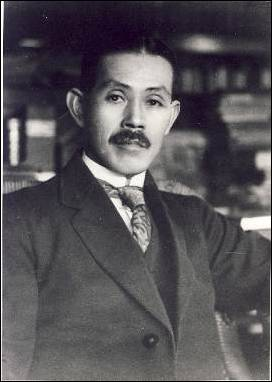

独立阅读
致力于公民社会的常识阅读
2011年 3月
细则
1、阅读报告力求独立但不宣称中立，撰写过程谢绝图书作者、出版者、发行者介入，观点尊重个人趣味，不求客观统一。
2、"独立阅读"执行编辑谢绝出版机构赠书，赠书将自动排除出推荐行列。师友赠书将注明图书来源，对于相关部分，读者可以抱十倍怀疑之态度。
3、"独立阅读"欢迎读者提出不同意见，将选登部分批评类读者来信，但谢绝只有观点没有论证过程的批评。
4、"独立阅读"观察员欢迎申请加入，但谢绝出版从业人员参与，来信烦请告知专长领域并附上阅读报告一份，连续三期撰写阅读报告将列入观察员名单，连续三期没有撰写视为自动退出；一年内在"独立阅读"发表三篇及以上文章者列入特约撰稿人名单，否则视为自动退出。
5、"独立阅读"欢迎订阅，凡订阅者将成为独立阅读的定向发行对象，在第一时间与"独立阅读"观察员、特约撰稿人共享阅读成果，读者来信、作者申请以及订阅事宜，烦请发信至shrbooks@gmail.com。
6、浏览最新信息可登陆豆瓣"独立阅读"小组：http://www.douban.com/group/duliyuedu/，以往各期"独立阅读"均可在以下地址下载：http://iask.sina.com.cn/u/1682295802/ish?uid=1682295802。
执行编辑：苏小和、王晓渔、成庆、言一、汪伟、孙骁骥、扬克、灵子
轮值编辑：成庆
观察员：文学：朱 白（广州）、朱航满（石家庄）
经济：苏小和（北京）
思想：成 庆（上海）
文史：王晓渔（上海）
特约撰稿人：戴新伟（广州）、羽良（北京）、严飞（美国·旧金山）、刘柠（北京）、汪伟（上海）、马慧元（加拿大·温哥华）、凌越（广州）、孙骁骥（北京）、贾葭 （北京） 、罗四鸰（上海）、扬克（德国·图宾根）、孙传钊（上海）、燕舞（北京）、灵子（北京）、吴强（北京）、言一（成都）
翻译：吴万伟（武汉）、朱芳艺（美国·孟菲斯）
编者按
春天自然是"绿色"的季节，而在许多地方，还能看到"红色"也在不断地弥散与扩展，这也让我们自然而然地想起三十多年前的"绿军装"与"红宝书"。
有词云，"流光容易把人抛，红了樱桃，绿了芭蕉。"流光固然容易把人抛，但"红绿一相逢"，却让人不禁忐忑，未来等待人们的"流光"，会是何等的面貌？
读者来信
朋友（朱航满）：
你好。你写的文章中，有一处错误（也可能是排版的人弄错了），作者是李霖灿。你写的文章第二行写成了"李灿霖"，可是行文到后来，又神奇的变成正确的李霖灿了。
《天雨流芳》我看过，很好的一部书，这两天我在写的一文中也引用了其中的句子。因此比较关注。乍用"李灿霖"，吓我一跳，以为自己引用错了呢。幸亏文章配有图，封面依稀可看到：李霖灿。
一读者
反馈：
这位朋友：
感谢您阅读拙文，所提出的问题，肯定是笔者的错误，我已查对过原稿了。真是谢谢您。
航满 敬上
目录
阅读报告 ·中国大陆
写 作：朱 白
朱航满
思 想：成 庆
文 史：王晓渔
专题 ·大国转型
苏小和：中国企业史上的三次"国进民退"
刘 柠：从"大正民主"到法西斯时代
书评
戴新伟： 命运将我们判给了赫拉巴尔
朱 白：一个不得不面对的"文学弱时代"
电影
言 一：没有都市的森林
访谈
灵 子： 台湾人民绝非失败者--专访齐邦媛
译介
david p. goldman ： 我们为什么听不见瓦格纳的音乐（朱芳艺译）
阅读报告·中国大陆
literature·fiction 写作·虚构
观察员 朱白（广州，youjinma@gmail.com）
到底是应该推荐一些有价值的书，还是应该介绍一些可能受到关注的书？写了这么久书评，装模作样地推荐书籍，到现在我在这个问题上不知道答案。书评人这个称号比较务虚，像资深xx人一样（就是你做久了不管好坏都可以叫个资深）荒诞可笑，什么书都能评的那不是人，是机器。当倘若这世上真的存在一种职业，不较真地称之为书评人，那么他的功能是什么呢？在这个势利而目光短浅的时代，我们只能随波逐流吧。
书评人说到底是为人做嫁衣的工作，就跟文学评论家一样，留给你的田地永远不会很大。当年意气风发的几个文学评论家朱大可、吴亮等人后来都改行了，这跟当代华语小说的不争气有关，也跟所谓"评论"这块地太小有关吧。朱大可的批评意在建构自己的版图，而不是满足于评论对象。他主编的 《21世纪中国文化地图（2008年卷）》（同济大学出版社，2010年10月）是一本寓教于乐、深刻而不刻板的文化解读资料，从2003年至今已经出版7本，保持着均匀的出版节奏。不是这本书的编者和作家太多才，而是这个光怪的时代太多荒谬，只需稍加注意，收集起来的全是人类史上的稀奇古怪。个人觉得作为全书重点的批评文选部分，有老迈的嫌疑，多年作者未变，似乎可以说明编选者的眼光之狭隘；质量不高不低，缺少惊艳之作，也似乎可以说明编选者之局促。倒是关键词和文化事件的梳理上显得越来越好玩和重要了。
关注的外国小说远远多于华语作品，原因不言自明，但现实是外国人你写的再好，受到的关注也不会多于一个国内写得不咋地的作家，比如这个名字：巴尔提斯•阿蒂拉，没多少知道，更没多少在意，你说他写的好，但写的好又能怎样呢，远不如贾平凹写本烂书让我们来劲。 巴尔提斯•阿蒂拉的《宁静海》（余泽民译，人民文学出版社，2011年3月）是我短期内看到最爽的一部小说。关于"恶趣味"的书可以罗列出来不少，比如同样是匈牙利作家克里斯多夫的"恶童三部曲"（《恶童日记》、《二人证据》、《第三谎言》，简伊玲译，上海人民出版社，2009年1月、4月、7月），以及麦克尤恩的《水泥花园》（冯涛译，新星出版社，2007年6月），还有不久前帕拉尼克的《肠子》（景翔译，吉林出版集团有限责任公司，2011年1月），等等，他们似乎都在"狠"这个事上一意孤行。《宁静海》与之相比，多了些宁静的思考和凝重的固执，故事放在动荡的90年代东欧变迁时期，绚烂和倒塌瞬间完成，可在人性深处，又是蕴含了怎样的地动山摇呢？我总觉得像电影《再见，列宁》那种故事，在人间一定散落无数。巴尔提斯的狠，无需刻意营造，是那种突如其来给你一击的感觉，至少在这点上，我觉得他可比帕拉尼克高级多了。
在"如何读，为什么读"的问题上，我觉得没什么捷径，这甚至无法像一门学问那样去教授和学习，只能自悟。但有大师愿意给我们讲讲自己的心得，大家也不会拒绝吧。 《如何读，为什么读》（布鲁姆著，译林出版社，2011年1月）是哈罗德•布鲁姆观点和技巧的展示，如何读，就像如何听、如何看一样粗浅、简单，但不管你承不承认，当代社会里不会读也不想读的人是大多数。哈罗德•布鲁姆作为文学教授和批评家，名声足够响亮，他这次要做的不是写篇充满新意的批评文章给精英们阅读，而是放下身段亲口讲讲"如何读，为什么读"。短诗、长诗、短篇小说、长篇小说和戏剧，在电影与网络面前都可以让你不屑一顾，但
这些人类的千年精华真的不值一提了吗？布鲁姆用作家作品来教教我们怎么读。
这是一个多灾多难的世界，诸多变幻早就超出我们的想象力，在匮乏的精神生活面前，人们用物质在展示我们的渺小和不堪一击。如果不是地震、海啸，大概我们还会继续觉得自己很伟大，比如人定胜天这种冒犯的话还会一而再地出现。跟平滑的现实比起来，我觉得人类伟大不是四大发明和军舰战斗机，而是我们的想象力，在这个维度下，人类的生活才有自言片语值得回味。蒂姆•波顿是一位会让心有灵犀人神魂颠倒的导演，他几乎已经可以等同于"想象力"这三个字。 《蒂姆•波顿的电影世界》（麦克马汉著，姜静楠、白娟娟译，上海人民出版社，2011年1月）这本书试图从导演在作品中流露出来的那些感性背后出发，挖掘出一个人的精神在现实经历下的映射。有些人，看书、看电影，但从不看跟电影有关的书，理由很简单，比如"怪诞"这样的词在书本上和画面上根本无法对等，你在电影画面中得到的感受，在书本中无法享受。但这本蒂姆•波顿评传不太一样，它除了介绍蒂姆•波顿的电影，以及这个人的生平，还有为你梳理出来导演的忧伤、冷漠、荒诞、残酷都来自何处。仅见识下蒂姆•波顿如何从少数派心头肉变成今天的商业票房大亨，就值得翻翻这本书了。
literature·nonfiction 写作·非虚构
观察员 朱航满（石家庄，zhm7976@126.com）
几年前，我北上读书，将一箱子旧书放在了一位朋友家，谁知这一放就是七八年的时光。前几天去搬书回家，才发觉整箱书如今可重读的并不多，挑来选去，也就拿出了一册太白文艺出版社1994年1月出版的《贾平凹散文精选》来闲翻，其他以前喜欢的学术著作，现在读来似乎也有些过时；也有些畅销书，现在读来几乎要倒了胃口；还有一些曾流行的作家著作，现在读来也觉得乏善可陈了。那天翻完了整个书箱，觉得自己读过的怎么都是这些东西，不觉感到一些悲伤；但转眼又想，或许这也正代表了自己读书的口味在升级和提高，不免又有些可怜的自得，不过倒是由此可见我如今的读书，之所以更多的只读闲书，也只关心文字，或许缘故也就在这里吧。还是再说说最近读过的好书吧，董桥的 《记得》与《青玉案》（广西师范大学出版社，2011年1月1版）不得不提，但这书实在是太耳熟了，书店里都明晃晃的摆着，不值得我在这里多费口舌了，董桥的文字经营的典雅与用心，大家还是自己品味吧。我只是觉得对于董桥的文字，广西师范大学的小32开精装固然风雅，但内文的版式却不太苟同，书做的也太过于厚重，想来估计也有选纸不佳的过错，因为在我的印象中，诸如董桥这样好文字的著述，应该是小开本、精装、薄册子，内文的版式既清爽又细密才对。关于最后一点，略作补充，我之所以不喜欢那种版式过于疏朗，插图过于频繁的著述，是因为会严重影响了自己阅读的效果和感觉。记得一次听贾平凹关于散文写作的讲座，谈到他写散文，喜欢在一张大稿纸上完成，一张写完，全文或一个章节也就结束了，原因是好前后照顾，而我对董桥著作的不满意处正在于此。
相比董桥的著作，三联的两册潘向黎的著作就很不错，也是小开本，精装，特别是版式和装帧，不但雅致，而且还清爽细密，我很喜欢。潘向黎的这两册著作分别为 《茶可道》和《读诗不分明》（三联书店，2011年2月1版），均为作家在上海的《新民晚报》副刊所开设的专栏文字，因此大多为千字文。《茶可道》一书谈茶，《读诗不分明》一书谈诗，前者论物质，后者论精神，但都是文人喜好的风雅东西，潘向黎执意将两册文集一起出版，或许用意正在于此。我读此书正值清明前夕，便想到唐诗中的《清明》，也想到难得一品的明前茶，无事闲翻这两册文集，发现竟均有论述，其中作家谈论明前茶一段，就很令我意外，她说明前茶之所以珍贵，不在于昂贵，也不在于难得，而在于它来得时机太好，正是旧茶刚去，新茶未来之时，可谓生正逢时。由此可见，潘向黎的这两册文集，不但文字清雅干净的可贵，而且在于她的着眼，均有令人耳目一新之处，可谓又是难得。潘向黎是上海的小说作家，曾获得鲁迅文学奖和庄重文文学奖，还是《文汇报》笔会副刊的首席编辑，曾留学东京，但我感兴趣的是，她还是复旦大学著名的文学教授潘旭澜先生
的女公子。潘向黎在文章中偶然提及，他父亲是福建人，家中曾有茶田数亩，父亲年轻时，一边读书，一边种茶，如今她自己读诗、爱茶，或许也有家传的缘故吧。
北京汉唐阳光策划出版的著作，两年前曾推出过本城文人刀尔登的著作《中国好人》（山西人民出版社，2009年2月），这次又推出缪哲的文集《祸枣集》（山西人民出版社，2011年2月1版），也是我所居住的这座荒陋之城的又一次意外。缪哲的写作，在我看来，总有些引而不发的意味。之前虽只读过他的零篇碎章，但已深佩其文章之妙。而我颇感他在文字操练上的绝好技艺，其实更多源自于用心搜求而来的几册由他翻译的英人文集，分别计有t·布朗所著的《瓮葬》（光明日报出版社，2000年1月）、爱德蒙·柏克所著的《美洲三书》（商务印书馆，2003年3月）、艾萨克·沃尔顿所著的《钓客清话》（花城出版社，2001年9月），以及吉尔伯特·怀特所著的《塞耳彭自然史》（花城出版社，2002年12月）。这四册著作均为英国17和18世纪经典的散文随笔集，而在缪哲的笔下，这些异域的陈旧文字乃是极其的典雅与清爽，读来活泼跳荡，生气十足，成为我爱不释手的舍下珍藏。但让我曾备感遗憾的是，坊间竟无用心搜集缪哲文字予以流布者，如我这样获知缪哲文章之妙的，也竟是朋友间极为原始的口耳相传。而待到我终能读到由他编成的薄册子《祸枣集》时，才发觉原来他真是写得太少了，据说这些屈指可数的十多万字，竟也是前后二十年煮字生涯的回顾与总结，还大多是在诸位深知其文章之妙的友朋催促下的遵命之作，真是极大地可惜了这副难得的精致笔墨。
有批评家朋友极欣赏缪哲的随笔文字，赞其"文体意识与精神气质"皆十分醒目，她为出版社编选随笔年选，尽管没有搜罗到新作，但也在序言中依然郑重地推荐了缪哲的文章，"随笔只是他学术研究的余墨，却无一篇不精，其语言雅涩佻达，充满灵智，味近周作人，而有周氏所无的冷衅、炽情与傲慢，若寻这味道的来源，或可溯至他的反愚谬与求平等的道德意识，这使他的小品亦透辟辽阔。"朋友的艺术感觉犀利确切，但对于缪哲思想与文风的源头，似乎还是应追究17与18世纪的英国文章，也还是那篇《好书无秘密》，他这样论及自己思想所受到的深切影响："英国人谈政治，总'利'字当头，不大'修辞以立其伪'。故政治与社会的运转之逻辑，往往不着一丝地裸在你眼前，不是白痴就能看懂。我智不过泥瓦匠，故这一段历史，恰可作我政治观、社会观的启蒙书。我用我读书的心得，去想我见于或闻于现实中的事，以前不懂的，如今大体上懂了，或自以为懂了。"如此，再读这册集子中的议论文字，便清楚和明白了许多。只是很可惜，他翻译的四册英人文集，均有洞见透彻和文辞雅驯的序跋文字，而这册《祸枣集》竟都遗漏了。
张宗子的散文集《垂钓于时间之河》（安徽大学出版社，2011年1月1版）早就想读，之前它曾被收录在学者赵毅衡主编的"海外流散文学"之中，可惜早就绝版了；这次由散文作家胡竹峰策划的"一真书蓝"中，收录了张宗子删订后的这册《垂钓于时间之河》。胡竹峰在附录中谈及此书乃是张宗子的青年之作，他形容青年张宗子的文章，像林青霞男装的古典扮相，英气勃勃中有些柔美；而青年后的作品，则好像中年蔡琴的声乐，漫不经心的一音一节全是功底。胡竹峰的评价我很喜欢，形象又确切，而我读张宗子的这本青年之作，很觉得他早期的散文，优雅柔美还隐藏着一种淡淡地忧伤，但与后来他的那些书卷气浓厚的散文相比，却从容与透明了很多。在这册新修订的散文集中，张宗子谈起他早期的这些散文写作以及这册散文作品集之所以诞生的因缘，原来他刚刚到海外，为谋生到创办不久的华文《侨报》担任编译工作，后来报纸增设副刊，他便被邀请为报纸撰稿，没想到一月一篇的散文写作，他竟然坚持了十年，后来不少文章都收录到这册散文集中，而那份写作心境的从容与淡定，以及自由与干净，都给我留下了很深刻的印象，因为他的这种写作既没有功利的引诱，也没有发表的担忧，更没有世俗的约束，是"随便写"的结果，也是"真自由"的结晶。
张宗子在《垂钓于时间之河》中收有一篇散文，题为"病中读书记"，写自己在他乡病中读书的心境与思考。人在病中的心情一定不同平常，何况是在远离亲友的异地他乡，因此找书来读排除心绪和忘掉病痛，显然是读书人的习惯，但看他最后选定的书目，一本是蒲松龄的《聊斋志异》，另一本则是周作人晚年在《亦报》上所写文章的合集，前者的故事好看，后者的文字漂亮，但也都是故国的旧物罢了。也因此，再读这本散文集，看他所写自己的见闻与思考，其实总是脱离不了那乡愁的滋味，也总是若隐若显地存在着故国的影子。也是难怪，记得刘再复将《红楼梦》看作自己的《圣经》，他用汉语文字在海外记录下了那些漂泊动荡的苍茫岁月；陈丹青在美国依旧读着中文书，他曾在纽约的林肯广场上一边读书一边落泪，后来他拜木心为师，也终于体味到了鲁迅的妙处；而北岛则将汉语看作自己在世界上漂泊的唯一行李，依旧坚持用汉语继续写作自己的诗歌；还有高行健、余英时这样的作家和学者，为汉语的书写赢得了最高的荣誉。当然，还有那么多的海外游子，他们使用汉语的文字来记录心灵，寄托生命，也承载那份沉重的故国乡愁。
thought 思想
观察员 成庆（上海，veron.cq@gmail.com ）
今年是辛亥一百年，陆续有不少与辛亥革命相关的书籍出版，其中相当部分并非新论，而是旧述。如 宫崎滔天的《三十三年之梦》（林启彦译，广西师范大学出版社，2011年3月）就是旧版新出，不过有坊间书讯介绍此书是国内第一次出版，可能是误察。因为不仅在民国时，此书曾以《三十三年落花梦》出版过，而且还以《三十三年之梦》之名，在1981年由花城出版社与三联书店联合出版过，并非是新出之书。
宫崎滔天本人，就算是在乱世之日本，也算是"浪人"中的异类，因为他对于中国革命的深度介入，其实背后隐藏着一个"左翼亚洲主义"的思想背景，毕竟从常理来看，一位日本"浪人"如此孜孜于与中国政治纠缠在一起，不仅连一般中国人感到奇怪，在西洋人眼里看来，也是十分古怪的事情。宫崎滔天曾在新加坡因被怀疑为暗杀康有为的刺客而拘捕，审讯官曾问他为什么对中国之事如此热衷，宫崎回答是因为同情中国的孤立和衰弱，希望其改良，而又问道他为何对"他国的事情如此地劳心呢？"宫崎滔天则回道："你问的是关于我个人的主义问题，同今天的事情无关。"宫崎滔天所谓"干涉他国内政"的"个人的主义问题" ，即为他的"左翼亚洲主义观"，这种"左翼亚洲主义观"，与后世的"军国主义"存有不少的
差别，不能一概而论，因为从其自述来看，他从一位自由民权者一变而为基督教徒，又从基督教徒再变为"左翼亚洲主义者"，这当中其实存在有一条信仰与价值与现实政治不断磨合的探索之路。
而有趣的是，这种关心"中国"的普世观念，其实来源自其二哥的熏陶，本来宫崎滔天在成为基督教徒后不断地向其家人传道，并成功地使其母亲成为虔诚的基督徒，但是在与其二哥的对话过程中，二哥感动于宫崎滔天的传道热情，袒露了这样一段颇能表现时代精神的话，值得在此摘录：
人生在世，必须能掌握时代的大方向。我为此事劳心多年，最近才有所决定。我认为，目前的世界，是一个弱肉强食的战场。强者逞暴，日甚一日，弱者的权利自由，一天天地丧失殆尽。这种现象，岂容轻轻放过。假使有人重人权、尊自由，就必须速谋恢复之策。现在如不设法防止，则黄种人将永远遭受白种人的压迫。而这个命运的转捩点，实系于中国的兴亡盛衰。中国目前虽然衰弱，但地广人多，如果能扫除弊政，统一治理，并能善加利用，不仅可以回复黄种人的权利，更足以号令宇内，行道于万邦。关键只在于能有堪当大任的英雄奋然而起。因此，我决意亲自进入中国，遍访英雄，游说他们共图大事。如果找到此人，我愿效犬马之劳来帮助他，否则，我将挺身自任。
悖谬的是，其二哥受其传道后，反倒浇熄了其这番雄图大略的热情，成为一名虔诚的信徒，而"共图大事"的种子却最终在宫崎滔天那里发芽生根，借由孙中山及中国革命而被书入史册。
关于孙中山及中国革命，最近有一本史料性质的旧书新出值得重视，即冯自由的《中华民国开国前革命史》，（广西师范大学出版社， 2011年3月），此书除开民国时期的版本及各种影印版本外，是首度的简体字版本。阅读此类历史书籍，除开史料部分之外，实际上也应注意其史观方面的细节所在，如该书的开章就探讨"中国革命之动机"，直接以"种族思潮"界定为中国革命的动力所在，并且认为洪秀全之太平天国，实际上是"种族革命"之先声。此种看法是否妥当，假如笃信当事人对其语境的熟悉程度，必然会误认为"种族革命"思潮一脉相承，是开启辛亥革命的重要因素，但从思想史的角度来看，这种以"满汉"来界定晚清一般人种族认知的看法，往往却落入"意识形态"的窠臼。
举例而言，种族主义思潮与达尔文主义的引入有密切的关系，使得"种族"这样一个生物学概念成为现代国家认同的一个重要指标，这也是"保种"一词深入士人之心的重要原因。 从"种族"角度出发，既有与西人相区别开来的"亚种"与"欧种"之分，也有"汉族"与"满族"之别，如果说"亚种"与"欧种"在生物学意义上极易划分外，"汉满"之间却因同属一个政权、满汉之间的文化融合而显得扑朔迷离，尽管对于"满汉"而言，生物性的种族之别可以成为区分的一个要素，但是要想将满人与汉人作出明确区隔，则"满"与"汉"的历史源流则可以发挥十分重要的作用。如梁启超就曾在1898年发表过一篇带有强烈种族主义色彩的檄文《论变法必自平满汉之界始》，直接引用的就是达尔文观念。
但是，要"平满汉之界"，虽有历史上的部分证据，但不足以说明经过二百多年的融合与共治，这样一种"种族观"仍然牢不可破，最近一本研究"满汉"族群关系的著作-- 《满与汉：清末民初的族群关系与政治权力（1861-1928）》（路康乐著， 王琴、刘润堂译，李恭忠审校，中国人民大学出版社，2010年11月版）即试图重新厘清晚清满汉关系与政治之间关联，作者认为，当时所谓的"满人"实际上已经从清朝立国之后，就已经逐渐转化为一种职业身份性质的"旗人"，他们的种族并不单一，因为"旗人"不仅有满人八旗，还有蒙古人八旗与汉人八旗，而且他们早期作为军事力量存在，后期则成为一个封闭的社会阶层，事实上并不具备强烈的"种族主义"色彩，当时称呼这一群体的大多为"满人"或"旗人"，而非"满族"，可见"生物种族性"的意识形态在当时也并没有今人所想象的那么狂热，"种族主义"或"民族主义"的魔咒往往来自今人自我封闭的想象，而深信其为牢不可破的"认同实体"，由此区分出"同族"与"异族"、"本国"与"他国"，就算自身的血脉、文化早已与其他文明、群体充分交融，仍然还会幻想存在一条清晰可见的"民族主义血脉和文脉"。换个角度请问 ，李白如算是胡人，难道我们能不诵唐诗？菩提达摩是印度人，难道我们就可以无视禅宗？
今日国内一些儒家本位论者，其角色颇令人费思量。如秋风就是其中颇具特点的一位，秋风早年引介自由主义，笔者受惠良多，他后来转入哈耶克及相关的奥地利学派，也是学理上的自然延伸，毕竟无论是哈耶克，还是米塞斯，其自由主义理论背后均有一套政治、历史及社会的理据所在。但近年来，秋风本人试图结合儒家与自由主义学说，试图论述出一条既含有儒家之伦理资源，又符合自由主义之新局面的思想脉络，却颇让人感到意外。秋风有此探索，无论是有感于现代化及世俗化对于信仰、道德层面的挑战，还是试图让今日政治之权力，能被塑造成为一具备伦理诉求的政治权威，都只能说是"提对问题，给错答案"。
所谓"提对问题"，是因为依笔者的观察，近年来在政治哲学界及法学界，有一股"保守主义"的回流倾向，开始强调宪法、政治背后的道德及信仰层面，如早年出版的《超验正义：宪政的宗教之维》，即是探讨宪政是如何从西方宗教传统中生发出来的历史过程，这本著作由三联书店出版于1997年，当时并无多少回响，却在后来无意中成为中国"保守主义者"一再提起的研究。就拿最近出版的 《美国宪法的基督教背景：开国先父的信仰和选择》（约翰•艾兹摩尔著，李婉玲等译，中央编译出版社，2011年1月）来说，即是类似陈述现代宪政与传统宗教之间关联的著作，其核心要旨就是认为，信仰与政治不可分，传统与现代不可断。 这样的问题，原本是回应"革命政治学"与"革命史学"割裂"古今"以及"传统与现代"，但却重新激活了今天的各种政治想象，于是不仅有"威权主义者"的保守主义理路，"自由主义"内部也开始分化，无论是秋风的儒家自由主义、刘军宁的天道自由主义，还是王怡的基督教自由主义，都是试图重新在"信仰与政治"关系上展开的对中国政治的想象。
一个现代化的自由民主国家是否需要建立在"信仰"的基础之上？就如著名法学家伯尔曼在《信仰与秩序：法律与宗教的复合》（姚剑波译，中央编译出版社， 2011年1月）中所言：
当今美国正在探索一种公共哲学，要透过我们的多元性来显现其中的潜在共同信念。我们必须认真面对一个事实，即信仰自由（也包括不信教的自由）归根结底是建立在信仰的基础上，而非建立在怀疑的基础上。
但问题的复杂性在于，要在中国这样一盘散沙的基础上形成新的"公共信念与价值"，不仅要面对"宗教"与"世俗化"之间的张力，同样也要面对"西风压倒东风"类似的"民族主义式的诉求"，所以问题会显得更加复杂与困难。这不仅意味着我们要挑选何种信仰作为"共同信念"，而且同时要面对"异质价值"的种种挑战，而这样的两难境地，对于一个经历过传统断裂与"革命道德"熏陶过的国家而言，将会显得更为艰难。
这当然也并非是中国独有的问题，就如伯尔曼也坦承道：
过去，我们主要靠竭力掩盖冲突来设法解决冲突。我们假称，一切信仰，包括宗教信仰与非宗教信仰，都是每个人的私事。这就阻碍了一种建立在我们关于人性、人类命运和人类知识来源及局限的基本信念基础上的公共哲学形成。
伯尔曼显然对于那种割裂公共哲学与私人信仰之间关系的思路表示怀疑，认为将信仰仅仅打发为"私事"会带来"公共信念"弱化的结果。但是对于当下的中国而言，或许问题要重新表述为："一种由国家单向灌输的'公共信念'是否就一定就比'众声喧哗'的现状更好？"
而今日的许多政治保守主义者或"儒家自由主义者"们，或许正是在这个问题上给出了不同的答案。
图2为宫崎滔天与孙中山等革命党人
history&culture 文史
观察员 王晓渔（上海，wangxiaoyu 1978@ sina .com ）
阿拉伯之春，冰消雪融，"人民的兄长、革命的导师"卡扎菲在指挥军队屠杀本国的平民。3月17日，联合国安理会终于通过第1793号决议，批准在利比亚设立禁飞区，同时授权联合国成员国采取一切必要手段保护利比亚平民。
每到这个时刻，"和平主义者"的声音都会特别响亮。"所有的战争都是残酷的"，这种义正辞严的观点推出一个荒谬的结论：谁支持人道主义干涉，谁就和屠杀平民的卡扎菲无异，因为他们都站在了战争的一边。对此，美国学者迈克尔•沃尔泽指出："我期盼一个没有战争的世界。但是我们还不是生活在这样的世界，装作我们已经生活在这样的世界里是错误的。有时候，在极端的情况下，人的生命、人类团结、民族国家和个人自由的价值必须使用武力来保卫。"那些"和平主义者"，在二战之前有另外一个名字：绥靖主义者。
沃尔泽在上个世纪70年代写出的《正义与非正义的战争》（任辉献译，江苏人民出版社， 2008年6月），尤其适合在今天重读。
一些国家表示不赞成在国际事务中使用武力，表示历史经验一再证明，武力解决不了问题，只能使问题更复杂化，还表示对话等和平手段才是最终解决问题的出路。这些话很动听，但正是在这些国家里，公民神秘失踪，公权肆无忌惮地使用暴力。1949年，奥威尔这样说："很难设想甘地的办法能够用在现政权反对者在深夜消失以后永远不会再露面的这样一个国家里。"随后，他又说："用于对外政治，和平主义要么不再是和平主义要么便成为姑息。"（董乐山编：《奥威尔文集》，中国广播电视出版社，1997年6月。）
利比亚的未来充满变数，但是这不意味着必须"稳定压倒一切"。暴力维持下的稳定不是和平，只是在唤起更多的暴力。这些道理已经说得口干舌燥，不说也罢。
德索托的《社会主义：经济计算与企业家才能》（朱海就译，吉林出版集团有限责任公司， 2010年11月）能够出版，有些意外。作者对socialism做出一个完整的定义："是任何对人的自由行动或企业家才能进行制度性限制或侵犯的体制，普通人、政治家与科学家往往会认为它是合理的，能够改善社会的功能，实现某些被认为是好的目的和目标。"这个定义充分说明一种恶的体制如何在善的名义下畅通无阻。
德索托指出，socialism只有和"经济自由"、"市场经济"成为同义词，才不再会出现"socialism反社会"的奇怪景象。读了这本书，可以更进一步的明确，"道德的血液"在何种情况下具有可能？它不是呼唤出来的，更不是强制出来的。
本栏阅读报告的任务是介绍文史类书籍，前面谈论的都是政经类书籍，有越界之嫌。现在归位，介绍一下以色列作家 阿摩司•奥茨的《故事开始了》（杨振同译，译林出版社，2011年1月）。卡尔维诺的《寒冬夜行人》，虚构了十部小说的开篇。《故事开始了》分析了果戈里、卡夫卡、契诃夫、马尔克斯、卡佛等十位作家的小说开篇，可谓非虚构版的《寒冬夜行人》。在奥茨看来，"开始讲一个故事就像是在餐馆和一个素昧平生的人调情"，《故事开始了》就是他研究前辈们调情史的成果。
那些分析技巧、主题、典故、原型等等的文学界人士，被奥茨视为生理卫生课上的护士，将人体的生理结构和运作机制讲解得清清楚楚，却让孩子们感到毛骨悚然。他说，好的读者应该像裸体沙滩上沉浸在《花花公子》里的男子，"进入作品中，而不是停留在作品之外"。奥茨无疑符合这个标准。
最后友情提醒一下读者，译林出版社最近重印了伯林的《现实感》等一系列书，版权页注明2011年第1版、第1次印刷。事实上，这些书曾在数年之前出版，这次只是封面微调，价格猛涨。盼诸位明鉴。
图1为绥靖主义的代表人物张伯伦
focus 专题·大国转型
中国企业史上的三次"国进民退"
观察员 苏小和 ( 北京 ，susumartin@hotmail.com )
关于"中国模式"的各种辩论，看上去热闹纷繁，但基本上属于宏大叙事，几无学术价值。一方面，这种集中了威权体制、有限的市场竞争、高强度的社会管制和国家贸易层面的重商主义倾向，并非中国的制度创新。所谓太阳底下并无新事，从经济史上看，整个18世纪和19世纪，欧洲几乎所有的国家都曾经采用过这种策略，到20世纪上半叶，尤其是希特勒时代的德国，更是如此。另一方面，这种试图从所有的方向解读中国的思想企图，事实上首先放弃的，是某个专业的路径。今天的中国是一个多么繁复的话题，好的学问家显然不会去寻找一个更加繁复的学术模式来解读中国，因为这会让问题变得更复杂，更空洞。为什么不从社会学的角度，或者从经济学的角度出发呢，事实上，今天所谓的"中国模式"，准确地说，应该是指向了中国经济的模式，因为关于这个国家的政治模式和社会模式，尚不明确。而经济模式，如果放在历史的流变中加以分析，并不新鲜。惟一可以强调的，是今天的中国经济已经置身于一个深度的全球化背景中，也许未来所有的变量，都是其中。
如此一来，所谓"中国模式"的辩论，更多的可能仅仅是一个蔓延在街头巷尾的话题，一个人人都想参与，但人人都莫衷一是的谈资。好在历史陈列在此，让我们的思考终于有了一个必要的参照谱系。
记住1883年的金融危机
我想提到的一个重要的历史年代，是1820年左右到1883年这段大约60年的时间。这很可能是被后人遮蔽得最严重的一段经济史话，在这段时间里，晚清进行了一次快速的商业贸易资本主义的发展。其中的市场逻辑是，西方资本主义开始进入中国，在沿海和内地一些重要的交通口岸，或者是中心城市，有意识地借用了一批本土商界的人士作为代言人或者是助理，这就是后来被部分历史学家诟病的所谓"买办资本主义"，或者被称为"依附性质的资本主义"。历史学家郝延平先生认为，正是这种输入性的资本主义，深深刺激了本土的商业竞争，也深层次地形成了西方大商人与本土小商人之间的合作。正是这种带有自由市场交换经济学意义的格局，中国的部分农产品第一次实现了远距离的市场化，甚至部分实现了国际市场化。与过去简单地囤积财富的商人不同，这个时候的中国商人开始学习西方商业的制造意识，不是沿袭过去非生产型消费，而是开始真正的工业制造，进行生产性的投资与产出，从而促使中国在进入近代以来，真正诞生了第一代工业资本主义的萌芽。
从自由市场经济的角度看，这样的萌芽，其意义非同小可。重要的是，这样的市场演进，不是晚清政府的主导行为，但也没有进行阻挠或者打压，基本上是由外资力量和中国民间市场力量共同演绎了这一段商业故事。所以经济史学家迈克尔·曼曾经说，假设这个过程缓慢延续，不中断的话，中国从19世纪后期就能发展出以本土资本主义为主，同时与世界资本主义经济体系挂钩的一种"常态的资本主义"。
以今天的眼光来看，这几乎接近于晚清时代的"改革开放"，60年的经济腾飞，很快让晚清政府的gdp水平跃居到亚洲第一的位置。1883年是一个需要中国人反复思考的年份，这一年爆发了严重的金融危机，郝延平的著作《中国近代商业革命》详细记录了这场金融危机带给晚清经济的冲击。不仅是上海这样重要的通商口岸和金融机构的大面积破产，不仅仅是刚刚兴盛起来的本土工业资本主义企业的凋敝，真正严重的后果是，清政府在李鸿章的主持之下，开始大面积兴起以官商结合为主要特征的资本主义工业化运动，出现了所谓官办、官商合办、官督商办的企业形态，官僚资本主义在接下来的20多年的时间之内，似乎站住了脚跟，并支持了晚清政府的政治局面，以至于李鸿章在谈及官商结合模式的商业形态时，自认为是中国人在经济领域的新发现。这就是被后人反复研究过的洋务运动，遗憾地是，历史作证，洋务运动是一场彻头彻尾的失败的工业化运动，其失败不在于外国资本的进入，而在于晚清政府的国家机会主义，用国有企业的方式推进工业化，用政府权力主导市场，全面扼杀了私人自由企业的发展。
这似乎是一场晚清时代的国进民退潮流，兴起的原因，竟然也是一场突然降临的金融危机，这不得不让人感叹，历史总是惊人的相似。当我们在大面积的国进民退潮流中看不清方向舵时候，理性的思考，是回到历史，而历史像一位早有准备的老人，总是能从自己的口袋里轻易拿出一个案例给我们看，告诉我们，不要得意，不要迷醉，历史就在这里，历史是过去，是现在，也是未来。
似曾相识的国家资源委员会
纯粹从国家财政能力的角度看，失败的洋务运动，的确让晚清政府再也无力为继，但政府垮塌并不意味着市场的破落，相反，由于政府对市场的干预力度弱小，真正的自由经济力量得以萌生。这正是被史学家反复称道的"黄金时代"的来由。1911年到1937年，这大约25年的时间，中国本土资本主义发展豪迈，不仅在商业领域，在很多实业和工业领域，也实现了同步发展，并诞生了一批在今天看来气象宏大的中国企业家。法国经济史学家白吉尔详细呈现了这一个时期的经济景象。与晚清第一次资本主义萌芽的内在机理类似的是，黄金时代同样没有依赖于国家政权的主导、保护和支持，在整个经济的演进过程中，政府处在弱势的地位，表面看上去是军阀混战，中央政府支离破碎，但正是这种破碎的局面，给中国民间企业的发展反而带来了相对自由的空间。美国兰德公司的经济史学家叶孔嘉整理出的数据显示，这一段经济的自由生长的确蔚为壮观，每年竟然保持在8%-9%的速度。
按照这样的发展逻辑，中国的资本主义应该迎来第二次机遇，但事实并非如此。1927年同样值得后人分析。这一年国民党南京政权基本稳固，官僚经济开始上演。白吉尔把1911-1927年称为发展起来的中国民间自主企业时代，把1930-1940年称为"统制经济"时代。这个统制经济的操作系统，正是被当时的人们热捧的"国家资源委员会"。从比利时留学归来的读书人翁文灏，有意识地从德国和苏联学来国家机器以行政力量来主导国民经济的制度，他们坚信这种模式可以集中力量办大事，能够实现最快的发展速度。到30年代中后期，国家资本主义成为民国经济的主流形态，在经济发达的东南沿海地带，很快抑制了民间资本的自主发展，抑制了民间创新的企业家精神。
如果把洋务运动称为中国近代企业史第一次"国进民退"，那么民国时代的国家资源委员主导的经济发展，就是第二次"国进民退"。面对这样的历史图景，我们有必要再次强调政府与企业分工的重要性。政府主导公共领域，企业主导市场的推进，这是最核心的经济学理念，原因在于，只有利益导向的企业，才能将更多的人卷入到市场迂回的分工体系里，而政府因为行政权力的色彩，不可能维护市场的自发秩序，相反，政府的过度介入只能导致市场分工的粗糙与片面。由此，企业主导的分工就能让更多的人参与到市场体系里，而政府主导的经济则只能形成一些小众的资本主义，或者是市场层面的私人俱乐部。某种意义上，这正是一个国家政府腐败，民不聊生的经济学缘由。相信1949年之后的国民党终于意识到了这样的经济错误，他们从1950年代开始，首先从经济政策的角度实行了转型，这就是被很多经济学家称道的"耕者有其田的土地改革"。现在来看，50年代初期台湾的土地改革，其经济学意义在于，切实给民间的资本更加充分的发展空间。这样的政策虽然在接下来的几十年内也受到过意识形态的冲击，但总体上，国民党政权的确完成了从国家资本主义、官僚资本主义向市场资本主义，民间资本主义的稳步转型。80年代之后的台湾经济，政府和行政官僚对经济资源的掌控，对经济活动的行政制约慢慢收缩，民间资本，尤其是中小企业、家庭企业逐步兴盛，台湾实现了一个缓慢的，但却是比较彻底的"国退民进"（公退民进）过程。这正是台湾能够成为亚洲四小龙之首的经济学理由。
第三次国进民退正在上演
这样的历史叙事，让丁学良先生感叹。他说这看上去"具有讽刺意义"，在近200年的历史变迁中，民间资本主义获得相对发展的时期，恰恰是中国的中央政府相对薄弱乃至于破碎的两个时期。一旦政府权力回复重建，可以逐渐发挥强有力的社会管制功能，它就必然越过公共管理的边界，把大手伸到私人企业的头上，收缩民间资本主义发展的空间，扩展国有企业的行业垄断力量，做大官僚资本主义或者是权贵资本主义、国家资本主义的地盘。当这样的逻辑发展到1950年代至1970年代，这个中国现代史上最强有力的政权，终于让民间资本主义的力量彻底绝迹了。
好在我们还有1978年。
周其仁教授对邓小平时代的经济轨迹有一个聪明的分析，他认为邓找到了中国特色的产权界定方法，把企业家重新请回到经济生活中，以及重新认识那只看不见的手。事实上这就是一部政府与市场的分工历史。从1978年开始，政府管制能力开始大面积退出，让农民和企业家自主经营，这本质上就是对古典经济学分工理论的确认。至于邓小平之后发生的一些重大经济事件，包括中国加入世界贸易组织、对国有企业的抓大放小，都可以沿着分工的命题予以分析和阐释。
从经验的层面看，应该说中国人在过去30年的发展中，基本上找到了市场经济的方法，只是在节奏上采取了一种更加保守的渐进式思维模式。但问题在于，2008年来了，这一年的秋天，全球金融危机骤起，中国政府开始采取一种更加凶猛的政府主导经济的政策，所谓主导，事实上就是控制，就是做大国有企业，消减私人企业的市场容量。今天的中国，任何一个观察者都能看到，在诸多关键的产业上，政府之手都是牢牢在握。不要说银行金融系统，土地资源系统、能源系统、铁路运输系统、公路运输系统、教育产业系统等这些本来就不打算放开的核心资源，就连看上去已经有限市场化的新经济信息产业、文化传媒业，甚至包括房地产业，都被政府之手超级垄断。大量的超发货币流入这些国有企业，再一次推高了国有企业的垄断能力。这已然形成了一种思维定势，一种经济的惯性：正是有这些战略制高点的政府控制，中央一级的大型国有企业才可能越做越大，以至于在很短的时间之内，中国的几大金融类国有企业，竟然登上了全球500强企业的头几名。
此情此景，具有权威性的"传统基金会-华尔街日报经济自由度"国际比较指标提供了一组有意思的数据，2010年度中国内地经济自由度是51%，在全球183个经济体中位列第140名，综合自由度大致与俄罗斯50.3%、越南49.8%、老挝51.1%、孟加拉51.1%、阿根廷51.2相当，显著低于中国台湾70.4%、韩国69.9%、日本72.2%、中国香港89.7%。这正是中国企业现代历史上第三次醒目的国进民退浪潮。历史会再次重演吗？历史推进到今天，如果我们依然无视晚清政府1883年金融危机之后官商结合的发展悲剧，如果我们依然无视民国时代"国家资源委员会"的政策悲剧，那么我们要么是对历史的无知，要么是对未来的狂妄。如果所谓的"中国模式"就是威权体制和社会管制背景下的国有企业扩张、私人企业退缩，就是政府对市场实现一种越来越严厉的限制，那么这样的发展方式，不仅在经济学分工理论上无法找到依据，在经济史和企业史的发展脉络里，也永远找不到成功的案例。
图1为江南制造总局
[美]郝延平：《中国近代商业革命》，上海人民出版社，1991年，13.95元；
[法]白吉尔：《中国资产阶级的黄金时代（1911-1937）》。上海人民出版社，1994年，18元；
周其仁：《中国做对了什么》，北京大学出版社，2010年，27元。
focus 专题·大国转型
从"大正民主"到法西斯时代
特约撰稿人 刘柠（北京，postdadaist@gmail.com）
如果把日本近一个半世纪的近现代史按君主国"万世一系"的法统作一简单区分的话，大致可分为三个时期：明治、大正和昭和。明治（1868-1912）长达四十五年，昭和（1926-1989）跨越六十三年，而大正（1912-1926）只有短短的十五年，比1989年才改元的平成（到目前为止的历史）还要短七年，短得就像一个过渡的栈桥。不过，虽则短矣，但在任何意义上，大正都是一个相当重要的时代，不仅时间上承上启下，而且在从一战前后到二战之间复杂万端的国际政治格局和多向度的"磁力场"中，日本所选择的国家道路（当然也是政治博弈的结果），已为其后来的自我毁灭埋下了伏笔，从而深刻地影响了几代日本人的命运，并改写了东亚乃至世界的政治地图。
大正是什么样的年代
"可爱的喀秋莎，分离多苦恼/趁薄雪尚未消融的当儿/让我们对神起誓吧……"1914年（大正三年），由著名剧作家岛村抱月作词、中山晋平作曲的《喀秋莎之歌》，是根据托翁的名著《复活》改编的同名舞台剧的主题歌，经剧中女主角松井须磨子演唱后，风靡列岛。一年后，歌曲灌制成唱片，销量突破两万，全国几乎所有有留声机的家庭都购买了唱片，是不折不扣的日本现代流行音乐之滥觞。歌里有种"蜜甜的忧愁"般的调子，唱出了大正初期东洋人对充满异国情调的北国"边疆"的浪漫想象。这里的"北国"，并非指日本本土的北海道，而是指"桦太"，即今天归属俄罗斯的南库页岛（萨哈林）。1905年，日俄战争结束，根据美国居中调停的《朴茨茅斯条约》，战胜国日本放弃战争赔偿，但却获得了北纬50度以南的南库页岛及其附属岛屿的领有权，面积达7.6万平方公里，同时把长春至旅顺间的东清铁路变为自己的囊中物。至此，日本终于把触角伸进了"满州"腹地，大大刺激了所谓"满蒙生命线"的战略野心，举国陶醉于帝国的大陆战果中。五年后，吞并朝鲜，日本一跃成为与欧亚大陆山水相连的"大陆国家"。
1910年代到1920年代，是日本城市化迅速发展的时期。1889年（明治二十二年，《大日本帝国宪法》颁布的立宪元年），全国只有31个城市，到1920年（大正九年）多达81个，城市人口占全国人口的20%。不是传统的"城下町"型城市，而是立足于军事和工矿业的城市获得长足发展，四大工业地带已然成型，大都市的周边地区开始形成卫星城。以东京为例，1925年，居住在郊外的人口为市区人口的两倍。
城市化进程的加速，在改变乡土面貌的同时，也催生了新的地域文化：农地变成住宅用地；社区集中的地方出现了商店街；以大公司、银行职员为主的薪金阶层登场，西装革履、手拎公事包的上班族们每天乘私铁、巴士在市中心的写字楼和位于市郊的独门独院的优雅住宅之间往来穿梭。新中间层的扩大（至1920年约占全国人口的8%），孕育了"中流意识"，中产生活方式蔚然成风：男性上班族收入水平提高，足以让太太成为专职主妇，在家相夫教子。1915年（大正四年），日文打字机被发明，较高的识字率使打字小姐成为婚前女性的专属工作，这些"骨灰级"ol和被称为"巴士女郎"的公共汽车售票员及女佣们构成了东洋社会最初的职业妇女阶层。
有中产阶级，便有面向中产阶级读者定制发行的中产趣味出版物：绅士杂志、少年杂志、少女杂志、妇人杂志如雨后春笋般出现在大都市街头的书店；"元本" 流行，袖珍文库本作为现代出版的东洋标准开始定型，出版业进入大众消费时代。电影从无声到有声时代，与"邦画"（国片）相比，"洋画"（外国片）更有人气。1925年（大正十四年），东京率先开始广播放送，不久广播网便覆盖大阪、名古屋。三年后，听众已逾50万人。加上发行量动辄达数百万份的全国性大报和周刊，这个时期的日本，已成为名副其实的大众传媒社会，被称为"大正现代主义"（taisho modernism）。
中产阶级的出现和媒体社会的发育，酿造了市民社会的文化，促进了文艺的繁荣。"白桦派"、"新感觉派"同人作家敏感地审视着帝国转身途中个人命运的颠簸，天才作家芥川龙之介于1927年（昭和二年）自戕时，遗书中流露的某种"恍惚不安"，像极了一个时代的隐喻；自学成才的画家竹久梦二笔下有着西洋风的面孔和东洋范的哀怨的"梦二式美人"是代表"大正浪漫主义"（taisho romanticism）的如假包换的符号；而从明治维新、自由民权运动时代的仿欧建筑"鹿鸣馆"的流行，到和洋折衷的钢混结构、顶着和瓦大屋脊的"帝冠样式"建筑的泛滥，则微妙地契合了日本民族主义的抬头。
何谓"大正民主"

所谓"大正民主"（亦称"大正德谟克拉西"，taisho democracy），并非当时既有的称谓，而是后人从民主的视角出发，反观从1900年代后期到1920年代末日本的社会变动时所得出的一种历史认识。据日本学者考察，"大正民主"最初见诸学界和媒体的论述大约是在1954年前后 。时值日本已结束美军占领，民主主义制度已然生根，并即将走入被称为"1955年体制"的超稳定社会契约的前夕。因此，从某种意义上说，"大正民主"的称谓本身，已涵盖了与战后民主的语境上的"温差"。就时间的对象而言，一般说来，"大正民主"并非单纯对应从1912年至1926年的"大正"十五年，而是前后各放宽五、六年，头尾分别嵌入明治末年和昭和初年，大约相当于从1905年到1931年的时段--即二十世纪初叶三十年左右的光景，为战后史学界通常的学术界定。
谈"大正民主"，无法绕过一对兄弟：吉野作造及其胞弟吉野信次（有趣的是，兄弟俩的夫人也是一对亲姊妹）。作造是日本现代启蒙思想家、政治学者、东京帝国大学政治史教授，早年曾担任过袁世凯的"太子"袁克定的"太傅"，是"大正民主"的理论旗手；信次是农商务省的官僚出身，第一届近卫文麿内阁的商工大臣、贵族院议员、翼赞政治会常务理事，战后受到整肃，被褫夺公职。剧作家井上厦曾写过一部舞台剧《兄弟》，诠释了吉野两兄弟在大时代的思想蜕变及其背后的心路历程。
"大正民主"的核心在于"民主"。可作为启蒙思想家的吉野作造，在最初译介"democracy"的学术理念时，刻意回避了"民主主义"的现成表达，而迻译为"民本主义"。这对于学贯中西的作造来说当然不是误译，而是一种权宜性表达：因为"民主主义"本意的"主权在民"，与《大日本帝国宪法》中的"天皇主权论"在法理上相抵触，于是只有退而求其次，以"民本主义"来置换（作造在晚年思想日益左倾，遂放弃"民本主义"而回到"民主主义"，此乃后话）。由此亦可看出，作为"大正民主"价值核心的"民本主义"，本质上是在明治宪法体制的框架内追求民主，即在不否认君主制的前提下，主张以宪法保障人民权利、三权分立、民选国会等。殊不知，如此诉求早晚会撞到"天皇主权论"的天花板，这种理论上的局限是先天的，也注定了"大正民主"的不彻底性和两面性。
乍看起来，吉野兄弟的思想与行动截然对立，但就结果而言，二人未尝不是互为表里，而理论上的分野，则刚好构成了"大正民主"的内在张力。作造话语中的"民本主义"，主张以民众为政治主体，构筑以民为本的政治，并使其体系化；而信次则以民众的自发性为前提，鉴于这种自发性有组织化的倾向，便试图将其转化为有效的统治；对于民众和政党崛起的状况，作造尝试以扩大政治"参与"来链接，而信次则试图将其"统合"到一种新体制中。就是说，正因为有了作造首倡的"民本主义"思潮的大背景，信次的利用民众的自发性而"统合"之的主张才有可能成为现实的选项。因此，所谓"大正民主"既不是放任的民主，也不是单纯的官僚暴力统治；民众既有一定程度的政治参与，但同时，这种参与又被某种神秘力量所诱导，不无滑向一种新的专制体制的危险。
尽管"大正民主"存在这样那样的问题，但无疑是一次弥足珍贵的彩排，对民主主义在日本的确立具有不可忽视的重要意义。客观上，从1924年6月至1932年5月，政党内阁取代军阀内阁，由政友会和民政党轮流执政的两党体制的一度实现说明议会民主政治并非完全是"浮云"（事实上，首届政党内阁原敬内阁的诞生还要早六年。但三年后，原敬遇刺身亡，军阀复权，引发第二次护宪革命）；与此同时，加藤高明内阁上台后，制定了《普选法大纲》，规定25周岁以上的男子享有不受纳税限制的选举权，在选举前居住在某个地区一年以上的30周岁男子享有被选举权。尽管该法限制了"因贫困在生活上受公私救济或扶助者"和流动工人的选举权，并剥夺了妇女的选举权与被选举权，但却使有选举权者从此前的334万人猛增至1415万人（占人口总数的25.8%），扩大了国民的民主是一个不争的事实。
博弈：民主vs极权
毋庸讳言，"大正民主"不是战后民主，不仅存在诸如"民主"与"民本"等法理上的先天性矛盾，且始终面临从极端右翼到军部等黑恶势力的挑战。好象一场漫长的竞跑，在触到终点的红线之前，在不同的时间和路段，双方都有过一骑绝尘的时候。而因缘际会，在一些重大的历史节点上，所谓"国际大气候"和"国内小气候"往往成为其中某一方的助力，于是乎历史顷刻间呈现出巨大的进步或倒退。
当然，在所有这一切表象的背后，病灶早已做下。其病根有些源自明治宪法中的"程序错误"（如"天皇主权论"、"统帅权"问题等）。至于那些宿命的遗传基因，恐怕还要到明治的精神构造，甚至日本文化的深层中去寻找（如民权与国权的关系问题等）。就大趋势而言，对左翼思潮及其团体、弱势群体的不遗余力的打压和右翼思想家所谓"革新"思想的抬头，以及受右翼国家主义思想洗脑的军部的崛起，仿佛潮涨汐落，此消彼长。
日本对左翼"异端"的弹压由来已久，且手段极其残酷。1910年（明治四十三年）的"大逆事件"，因莫须有的所谓"天皇暗杀计划"，无政府主义者幸德秋水等26人被检举起诉，24人被宣判死刑，其中12人被处刑。一时间，社会主义运动完全停滞。空前的压抑感使知识分子噤若寒蝉，作家石川啄木以一篇题为《时代闭塞的现状》的评论表达了自己苦闷的心境。
1923年（大正十二年）9月1日，发生关东大地震。东京、横滨一带，地震引起的大火延烧了三天三夜，近一半的街区化作灰烬。有谣言说平时备受欺辱的朝鲜人要趁机报复，"投毒"、"放火"、"抢劫"说不胫而走，于是军、警、宪、特一起出动，在青年团、在乡军人会、消防组组成的自警团的配合下，以"维稳"的名义，捕杀朝鲜人，并波及华侨，有数以千计的朝鲜人和大约200名中国人遇害。接着，在东京宪兵队涩谷分队长甘粕正彦大尉的指挥下，著名无政府主义者大杉荣夫妇及其年仅7岁的外甥橘宗一惨遭虐杀。
不仅是对反体制"行动派"人士的打压，政府对思想、言论也采取了严厉的监控管制措施，甚至一些温和的自由主义、民主主义思想，也成为牺牲。1933年，自由主义学者、著名法学家、京都帝国大学教授泷川幸辰认为犯罪问题必须追究其社会根源，日本刑法中规定通奸罪只限于惩罚妻子，而没有对丈夫做同样的规定是有失公正的。泷川的观点被右翼攻击为不符合国体的"赤化思想"，在文部省的压力下，被迫辞职。结果京大法学部全体教授随泷川一起辞职，致舆论大哗（泷川事件）。1935年，另一位著名的自由派宪法学者、东京帝国大学教授美浓部达吉否认天皇是统治国家的主体，主张治权属于"法人"的国家，天皇只是作为国家的最高机关而行使治权（即"天皇机关说"），遭到军部指控。他们动议政府发表所谓"国体明徵声明"，给校方施加压力，美浓部被迫辞去贵族院议员职务，其著作也遭到禁止发行的处分。
随着经济萧条的加剧和日本国际环境的日益险恶，言论空间越收越紧，内阁、军部均有专设部门专事言论管制。"卢沟桥事变"后，内阁情报部沿习陆海军省报道部的先例，每月召集名曰"杂志、出版恳谈会"的例会，参加者均为各大出版机构、新闻媒体的编辑责任者。会上，从对"问题内容"的删改、"调整"通报，到希望以媒体、出版社的名义"自行编纂"的指导性内容要求，到对不符合规范的内容的"建设性批评"，对编辑事务全面干预没商量。 直辖内务省的"特高课"（特别高等警察课）是恶名昭著的思想警察组织，跟踪、"喝茶"自不在话下，对被认为言行"出位"的自由主义作家、学者、新闻记者，不惜动用绑架、酷刑，甚至肉体消灭的极端手段。而所有这一切迫害，都是以《治安维持法》为武器，以维护"国益"和"稳定"的崇高名义，在光天化日之下"合理合法"地操作、实现的。在这种意识形态部门、国家恐怖机关和军部组织机构叠床架屋，彼此间利益协调、情报共享、相辅相成的立体化作战的攻势下，从"九一八"事变前后至战时，日本铺设了举世罕见的新闻出版检查体制，密如裹尸布。
在这种情况下，不要说"异端"思想的空间已被彻底封死，有时连"自己人"都难幸免。太平洋战争爆发后，被认为日本顶尖的战略家、曾一手策划了"九一八"事变的石原莞尔，因其不主张中日战争扩大化的"消极"立场开罪了东条英机，其战略学著作《战争史大观》、《国防论》虽然已经分别由中央公论社和立命馆大学出版会付梓成书，但却遭到禁止发行的处分，由宪兵队监督强行绝版。 回过头来看，被称为"大正现代主义"、"大正浪漫主义"的、被出版传媒催生的大正年间的开明、西化的文化氛围，恍如昙花一现。
对思想、言论的控制，当然不会终于纯意识形态、文化层面，其向社会和现实政治的渗透、蔓延只是时间的问题，是题中应有之义。因为从本质上说，后者是目的，前者是手段；而实现的路径，便是法西斯化。1930年4月，由于内阁批准了伦敦裁军条约，被军部职责为对天皇"统帅权"的侵犯，内阁总理大臣滨口雄幸在东京车站遇刺，从而拉开了军部和右翼势力制造法西斯恐怖的大幕。继任的若槻礼次郎内阁因在"满蒙问题"上主张与中国政府谈判，被力主以军事手段强占的关东军及陆军部攻击为"软弱外交"。翌年10月，军部少壮军人策划发动政变，推翻政府，建立军事独裁政权。尽管因内部意见分歧而未能付诸实施，但却迫使若槻内阁总辞职。民间法西斯团体"血盟团"制定了"一人杀一个"的计划，奋起暗杀政界、财界首脑。先是于1932年2月刺杀了原大藏大臣井上准之助，一个月后，又刺杀死了三井财阀首脑团琢磨。
1932年5月15日，海军少壮派军人及民间法西斯团体在东京发动军事政变。他们袭击首相官邸，杀死首相犬养毅，同时袭击了警视厅、政友会总部、日本央行等机构，史称"五一五事件"。尽管此次政变未能达成建立军事独裁政权的目的，但却终结了长达八年的政党内阁，成立了以海军大将斋藤实为首的、由军部指导的"举国一致"内阁，国内政治环境为之一变。而事实上，前一年由屯驻"满州"的关东军少壮军人策动的"九一八"事变，已然昭示了军部的失控。同时退出国际联盟，标志着日本从国际协调主义外交踏上了"光荣孤立"的道路，继而与中国不宣而战，对英美等民主主义国家彻底背过身去。"明治维新以来，一直走上升道路的日本国运，从此以后，就开始走上了陡峭的下坡路了。"
应该看到，日本的选择并不是偶然的、孤立的，而是政治博弈的结果。实际上，在这一连串赤裸裸的国家暴行的背后，始终贯穿着右翼思想家的"革新"逻辑（如北一辉的《日本改造法案大纲》），如雨后春笋般层出不穷的右翼组织（犹存社、行地社、一夕会、樱会等）及被国家主义思想洗脑的一代热血"志士"的崛起，则构成了这种选择的社会基础和内在动因。
但与其说是"选择"，其实也未尝不是"被选择"的结果--所谓"选择即代价"。这种历史性选择的恐怖之处，在于其不可纠错性、不可逆性：打出一张险牌之后，如果不接着下更大、更危险的赌注的话，便有可能被搞掉。譬如，时任驻满关东军作战主任参谋的石原莞尔作为"九一八"事变的始作俑者，无疑是彼时日本不可多得的真正具有雄才大略的精英战略家，但在"卢沟桥事变"时，却基于某种现实主义的立场，力主战争"不扩大方针"，遭到军部的排斥，从而被边缘化。但也唯其如此，太平洋战争前夕，石原便以中将军衔被编入预备役，继而彻底退官，转任立命馆大学战略学教授，寂寞的转身，却使他平安躲过了远东军事审判的一劫。是耶非耶，这正是历史的吊诡之处。
暗黑的昭和
仿佛为了昭示先天不足的"大正民主"的昙花一现似的，1926年12月25日，大正天皇（嘉仁）这位罹患多种疾病、羸弱短命的君主驾崩，享年仅47岁。而此前，大正天皇因健康问题引退，由太子裕仁摄政已届五年--昭和时代开始了。
如果用一个词来形容昭和的开端的话，那就是"恐慌"。1926年底刚刚改元的昭和，仅三个月后，便遭遇了一场金融危机。多家银行因不良债权问题而呈现经营恶化迹象，1927年3月，关于银行倒闭的传言在社会上流行，遂引发挤兑风潮。结果一个月的时间内，有37家银行处于停业或倒闭状态，其中包括台湾银行、第十五银行等大型金融机构。金融危机的影响波及方方面面，政府被迫颁布《延期支付令》，指示所有银行停业三周。
金融危机的结果，大大强化了日本产业、金融的财富整合。通过企业兼并和联合，在产业界形成三井、三菱、安田、住友等四大财阀，在金融界则形成三井、三菱、住友、安田、第一银行等五大垄断性银行。金融资本与产业资本的强强结合，使少数财阀控制了财界。财阀又通过提供政治资金的方式，控制了政界。同时，为转移风险，消化国内市场萧条的影响，对海外市场，尤其是中国市场的依存度提高，大型纺织企业纷纷在中国建厂。
一波未平，一波又起。1929年（昭和四年）10月，纽约股市大崩盘，引发了前所未有的世界性经济大恐慌。屋漏偏遭连夜雨，尚未从两年前的金融危机中恢复元气的日本，再受重创。恐慌之后，是漫长的萧条。日本为摆脱危机，三十年代初，采取各种措施加强国家政权与垄断资本的结合，大力推进军需产业优先的战争经济体制，为侵略战争铺路。短短几年的光景，通过政府大力推行的卡特尔化和托拉斯化，垄断资本对国民经济的统制能力极大强化，国进民退，明治、大正时代积累的民间经济的活力已丧失殆尽--客观上，经济危机加速了日本法西斯化的进程。
1936年2月26日，一个大雪的清晨，约20余名皇道派 青年将校率领约1500名军人发动大规模武装政变，分数路袭击首相、内大臣、教育总监、大藏大臣等政府要人住宅及警视厅、《朝日新闻》社，占领了首相官邸和陆军省所在地永田町，向陆军大臣提出实行"昭和维新"、任命皇道派头子荒木贞夫为关东军司令官等八条要求，史称"二二六事件"。政变虽然以失败告终，皇道派也随之解体，但其政治诉求却经政治对手统制派之手悉数变成了现实：诸如陆军首脑换马、"革新"政治、对大陆强硬路线，等等。
"二二六事件"是日本经济、社会法西斯化进程完成的标志。至此，国家的政治运作完全被军部绑架，议会民主体制彻底停摆。紧接着，翌年，"卢沟桥事变"爆发，内阁出台《国家总动员法》，总体战体制正式启动。日本一头扎进昭和前期的暗黑的不归路，不仅拼光了明治开国近一个世纪以来，积数代人之功胼手胝足构筑的国富，而且把整个民族推向了亡国灭种的边缘。
图1为日本大正时期的泳装少女；
图2为吉野作造；
图3为石原莞尔；
图5为日本"二二六事件"
bookview 书评
命运将我们判给了赫拉巴尔
特约撰稿人 戴新伟（广州，pessoa1935@163.com ）
你读过赫拉巴尔吗？
回答应该是肯定的。这不奇怪，中国青年出版社自2003年出版这位捷克作家的《过于喧嚣的孤独》以来，已有七册"赫拉巴尔精品集"陆续翻译出版，2007年又出版了他的长篇小说三部曲《河畔小城》，包括《一缕秀发》、《甜甜的忧伤》和《哈乐根的数百万》。"巴比代尔"、"底层的珍珠"、"温柔的粗汉"成为了这位"出土"捷克作家的标签，而最最著名的，莫过于"过于喧嚣的孤独"，一度成为造句甚多的"文学腔"。谁都觉得自己心里住着个书籍打包工汉嘉。《你读过赫拉巴尔吗》一书的作者，赫拉巴尔的忘年交托马什·马扎尔谈到他与赫拉巴尔在布拉格金虎酒家一起度过的七年时说："命运，或更确切地说，一种更高的精神力量将我判给了赫拉巴尔。"
这本书是写给那些被"判给了赫拉巴尔"的读者的--读完此书，无疑这种归属感会更强烈，对这位作家的感情也会更加深沉一些。
像我们所熟知的文学回忆录一样，本书作者托马什·马扎尔占有一个相当好的位置。他是赫拉巴尔身边的近距离观察者，私人秘书，酒馆最佳伴侣，出版事宜的跑腿，也是可以一起谈文学的朋友。他比赫拉巴尔年轻42岁，可以帮助老作家应付生活中的大部分麻烦。他掌握的很多事情，都不是我们这些通过阅读小说来了解赫拉巴尔的读者所知道的。但是，无论是托马什·马扎尔认识赫拉巴尔的七十年代（后者最倒霉的岁月之一），还是在赫拉巴尔成为世界知名作家的八九十年代，这部书都不是那种揭秘式的回忆录--既不是揭开"仆人眼中的伟人"，也看不出锦上添花趁机哄抬自己身价的地方--对于这一点，不好替托马什·马扎尔打包票，不过能够追随类似赫拉巴尔这样的魅力人物，尤其是在其晚年，托马什·马扎尔更让人敬佩。作为一度保管着赫拉巴尔家钥匙、可以代他去银行提钱（主要是为了喝酒）的身边人，托马什·马扎尔真实地记录了晚年的赫拉巴尔，他的现实生活（这一点，不同于他借小说之名所写的自传三部曲），精神生活（这与赫拉巴尔的自我评价如《我是谁》里面所写的也不尽相同），这是旁观者得出赫拉巴尔的影像。
就拿1997年2月3日赫拉巴尔之死来说，官方说法是"喂鸽子不慎坠楼"，而当我们把此事置于托马什·马扎尔对晚年赫拉巴尔的观察记录中，就会对这位作家的境况了解更多。赫拉巴尔在妻子（他的经纪人，管家，也是他小说中爽朗勇敢的女主角，碧朴莎）去世之后生活的一塌糊涂，在写作上的停滞与枯竭，在遭遇冷冰冰的医疗系统时的无力感--"生活越来越艰难"，这是其中的一个章节。"年迈的际遇是非常苦涩的。赫拉巴尔对此心知肚明，深感自己的无可奈何，如此度日真是艰辛。"了解这些日常琐事都比去探寻赫拉巴尔之死是喂鸽子还是其他原因更有价值。如果说曝露那些冠冕堂皇大人物的阴暗面可以让我们更全面地去了解人本身，如奈保尔之与保罗·克索的交恶，那么体会诸如身体衰颓而世界依然奔涌前行，又未尝不是一种难得的人生经验。
在文学世界里不仅仅是奈保尔与保罗·克索，毕竟还有约翰逊博士与包斯威尔。从某种程度上说，托马什·马扎尔颇像忠心耿耿的包斯威尔。当年捷克总统哈维尔将正在金虎酒吧痛饮的赫拉巴尔介绍给美国总统克林顿（见此书p141照片），是一则广为人知的文学掌故。然而通过托马什·马扎尔的批评，我们知道赫拉巴尔的告别仪式上，尽管读者挤得水泄不通，官方却"只有一个文化部长出席"。托马什·马扎尔和他的朋友们对此深感不满。
因为这样鞍前马后的关系，尤其是两人的关系从七十年代持续到赫拉巴尔吃香的年代，在荣誉与名声的背后也有阴影与议论。托马什·马扎尔提到，有人就指责晚年的赫拉巴尔被人包围，外人很难渗透，一些人"垄断了赫拉巴尔"。这是合情合理的指责，类似的例子我们司空见惯。不过我也颇欣赏托马什·马扎尔的辩解（某种程度上也可以说是回击）--"这是一种对较为广泛的相互关系视而不见，特别是对赫拉巴尔和他的生活习惯毫无了解的，一种出自极其糟糕的角度的看法"。（p40）我们大可以相信确实有这么一个圈子存在。可以想像，那些急于采访赫拉巴尔的记者，没谱的投资人，酒馆里无聊而难以打发的仰慕者，必然会对托马什·马扎尔这样的"小鬼"心有怨气。说到报道，我在想，那些怀着明确的采访目的的记者，与我们这样慕名而读的读者何其相似，都是出于"赫拉巴尔是一位著名作家"这个前提，而托马什·马扎尔的"报道"却不是如此冠冕堂皇，但更加真实。他说他曾经拍摄过老年赫拉巴尔艰难行动的录像带，取名为《博胡米尔·赫拉巴尔的一天》，"这是我与他共同度过并拍摄下来的普通一天的记录。我想这恐怕是赫拉巴尔孤寂老年的悲戚画面，是一则最真实可靠的报道"。（p39）可惜的是，这个世界关注光环远远胜于关注平凡。
正是由于托马什·马扎尔这样的杂务角色，他所记录的大作家赫拉巴尔自然没有《我是谁》一书当中的整洁光辉，而是繁琐的，具体的，杂乱的，有时甚至是难堪的--比如赫拉巴尔酒醉之后当街小便。多么难堪啊，作为陪在他身边的人，这也反证出托马什·马扎尔的活路不好干。这些粗鲁的生活记录更有助于了解那个曾经写作可以像他喝下的啤酒那般畅快的作家，他的困境与难题。这是从生命历程上看待一位作家。
托马什·马扎尔谈到1972年第一次读到赫拉巴尔的短篇小说集《"世界"快餐店》的感受是，想立刻将赫拉巴尔所有的作品都找来读。在他与赫拉巴尔的关系中，还有就是读者与作家。他利用随侍左右的机会，记下了赫拉巴尔对自己的写作、作品的看法，这是此书的第二部分。托马什·马扎尔代替普通读者提问和倾听，包括"巴比代尔"的来源，"温柔的粗汉"是谁，师承--拉伯雷、塞利纳到巴别尔、超现实主义，还有赫拉巴尔终身热爱的哲学家叔本华和老子--他有一本翻到烂的《道德经》，1920年出版的捷文版，以及"哈谢克的光芒，将我照得乃至让我能借填字游戏和剪贴给作品以更多趣味"。我们可以读到赫拉巴尔的作品不止目前见到的那些，有不少是后来大作品的预习。他的一些力作产生的背景，比如《我曾经伺候过英国国王》和《过于喧嚣的孤独》即产生于六七十年代政治高压时期，也是一系列习作的加工和"剪贴"。他的家世，他对小酒馆一生的热爱，等等。所以，这本书也是一位读者对赫拉巴尔的阅读和理解，这一点与赫拉巴尔借他妻子来评价他（一如他曾借他母亲的视角来评价他和他那位文雅小资调调的继父）有所不同。
赫拉巴尔1914年生，经过了奥匈帝国，纳粹占领，共产主义，东欧巨变，在他定居的城市布拉格，也是卡夫卡、塞弗尔特的城市。"我是喝奥地利的牛奶长大的呀！"赫拉巴尔如是说。这里不是东欧，而是中欧。托马什·马扎尔记录了赫拉巴尔在酒馆里的几句自我评价，很是恰当：
我曾写过的时代与我最后写作的时代相比，如今不只是时代变了，而且这些字词也有了不同的意思……我只能对其微笑处之。可与此同时，我也受到了惊吓。
托马什·马扎尔这样写到："赫拉巴尔在灵魂深处确实是个胆小的人。"他指的是赫拉巴尔面对自己作品以及相关的编辑、出版社、读者流程的态度。在捷克1968年"布拉格之春"开始后，境况刚刚好转起来的赫拉巴尔面临着作品不能公开发表的尴尬，他在郊区的"林中小屋"也成了秘密警察监控的地方。不过，从他步入文学圈开始，周围便有地下出版的氛围和传统，传抄和扩散被禁作家的各类手稿、打字文稿，赫拉巴尔这一时期的作品很多都是通过这种形式发表的。出现在这本书里的地下出版社有这些："封条"、"探险"、"废品箱"、"布拉格想像"，还有国外的流亡出版社如"68出版社"、"禁书出版社"、"交谈"、"边缘"等，而本书的作者托马什·马扎尔也是这个出版环节的一员，他正是因为这个"业务关系"才认识赫拉巴尔的。除此之外，布拉格的小酒馆也是交换地下作品的地方，而赫拉巴尔也从经济上支持某些地下出版社，让它们运转，印刷其他被禁作家的作品。其中"封条"出版社的出版人瓦楚里克给赫拉巴尔写信说："我不管在哪儿见到您的手稿，就会在那里加以誊抄，即使不是我来干这事，别人同样也会这么干。"大概多亏了这些勇敢而又具有文学品位的出版人，竟然使得赫拉巴尔大部分的作品都在这些地下出版社印行，当九十年代地下出版社合法之后，卡德莱茨的"布拉格想象"出版社出版了19卷《赫拉巴尔文集》，并且恢复了未经删改的原样。托马什·马扎尔还记下了赫拉巴尔的两种出版人之间的竞争，一是做豪华、高质量、限量版的，一是高速度的。后者赢了，因为越是到晚年赫拉巴尔越是想第一时间见到自己的作品问世。作为作家，赫拉巴尔的路程太艰苦了。
相比自己的出版人，作家赫拉巴尔并不勇敢。因为作品的广泛地下传播，他免不了受到有关部门的注意，那位"淡黄头发的先生"一直是他的噩梦。托马什·马扎尔没有讳言赫拉巴尔的软弱与妥协，以至于他太太都看不下去，问他你怕什么呀。赫拉巴尔在授意下给出版人写信，违心地表达不再出版的意思，这些举动都是被原谅了的。怕虽怕，风声稍过，他又继续"供稿"。去年读到赫拉巴尔这封信的时候，正好读到国内一位名作家的专栏，写的是对负责调动自己工作的各级领导的感激。动辄拿国外与国内比较是一件让人厌烦的事，可是你往往又忍不住，比如读到这样的专栏。像这样的两位作家，他们对自己笔下的文字持何种态度呢？读者对作家的这些表现又持何种态度呢？赫拉巴尔的"软弱"未必会得到所有读者的宽容，同样的对于当权者的赞颂也会给人留下疑问。
读到赫拉巴尔的小说之后，我曾经有意识地寻找捷克的文学作品，包括《捷克文学史》，但是在过去翻译出版的捷克文学作品，比如《捷克短篇小说选》里，找不到赫拉巴尔的名字。那么在赫拉巴尔作品随手可得的情况下，类似《你读过赫拉巴尔吗》这样的清浅读物又是否还有阅读的价值？托马什·马扎尔所揭示的晚年赫拉巴尔是有价值的，知晓这位作家的困顿、软弱、无力，才能构成完整的文学世界。
图1为博胡米尔·赫拉巴尔
[捷] 托马什·马扎尔：《你读过赫拉巴尔吗》，刘星灿译，中国青年出版社， 2010年6月，29元。
bookreview 书评
一个不得不面对的"文学弱时代"
观察员 朱白（广州，youjinma@gmail.com）
2010年出版《四喜忧国》的台湾作家，其实早就在大陆闻名，甚至直到今天我也愿意这样认为，《小说稗类》虽然作者自谦是"琐碎"之谈，但类比大陆作家的著作，实在是高出了几个档次。就眼界所见的几位小说家谈技方面的书，要么是臆断缺乏有效的说服力，要么就是不入流的见识堂而皇之讲了出来，最不可饶恕的是自以为是天下第一个发现的却是某种庸俗常见。凡事就怕做比较，张大春的《小说稗类》虽然称不上滔滔大论、处处开花，但以"小"见长，能将常识说透，说起来这种积极的影响应该不小。
"小说"甚至文学本来就是"小技"，跟航天飞机、高速铁路比起来，小说只是迷你型的话题。看来张大春也是认定了这个观点，小说《城邦暴力团》以及这部短篇小说集《四喜忧国》都毫不掩盖自己的通俗性。内容和写法统统小而化之，既有现代小说的灵性，又有古典小说的传奇剧情，通透、通俗，拥有独特的想象力。但遗憾的是，张大春没有将这种通俗接通地气，复原文学的基本定义，令才华、富有魅力的技巧浮于表面。这些甚至可以从他后来的《城邦暴力团》看得更加清楚，一种貌似通俗但却内心纠结、通俗而又舍不得放弃宏大气场的叙述结构，只有野心，没有真的抵达，一言以蔽之，这样做的效果实际上是虚张声势。
不知道头顶"当代最优秀的华语小说家"帽子的张大春本人是否觉得舒服，这也让人不得不将如今大多数评论当成广告去看，他们介绍和评价的不是商品的特点，而是一切都是为了"卖"。"最"字是广告中的禁忌，书评也好，评论也好，也还是不要沾上吧。
《将军碑》、《四喜忧国》这些创作于上世纪八九十年代的作品，即便今天看也常有出人意料的地方，作者涉猎极广，渊博的知识精心置于字里行间。放在同时代下，比如跟大陆90年代的先锋小说整体水平比起来，至少不输。但这样也担不起诸多颂扬中的"当代最优秀华语小说家"啊，下回我们的评论家是不是还要多发明几个"最牛逼"、"最卓越"……反正汉字经得起折腾。再退一步讲，即便这样的"最"张大春当之无愧，放在整体落后虚华的华语文学里，也不值得你们如此欢喜鼓舞。
如果这是一份台湾作家提供给当代华语文学的样本，那么我们认定它的品质属于二流，加上事先张扬的虚拟颂扬，便构成了又一份证实我们华语文学正在经历一个无比孱弱的时代的证据。那些祈求台湾作家拯救华语文学的读者们（更多的是出版商吧）又一次要失望了，文艺作品适合被吹捧，不间断发生的文学抬轿事件也是今日之司空见惯，但品质上的东西历史迟早还是会让真相露出水面的，毕竟吹捧和抬轿都只能是浮云。如果对浮云还充满敬意，是不是我们显得太可爱了点？
无需证实，当下就是一个我们不能不要面对的"文学弱时代"，这已是定论，面对最富有戏剧性的时代变迁，现实里的一切已经穷尽我们作家的想象力，剩下的只是用恰当的方式去呈现，但现实是，我们的文学孱弱得就像新生的婴儿，一切都只能寄托在未来，而在当下还没有配得上这个时代的作品问世。张大春身单力薄，无法承起时代的重量。但显然，将我们近20年的坏文学让一位来自台湾的作家背负，也是不厚道的。
坦率地讲，《四喜忧国》并非坏小说，反而是轻松阅读并能带来深度阅读快感的小说，但鉴于一直以来不明真相的吹捧、心怀叵测的唱高调、暧昧不清的抬举太多了，跟期望比起来，它显然过于轻薄，跟自身达到的效果比，它的手段又显得过于复杂不实用。用金钱的逻辑我能理解出版商对此的厚脸皮摇旗呐喊，再哗众取宠都在理解范围之内，但大批的有阅读习惯的文学青年跟着一同叫好，多少有点令人费解。《四喜忧国》以及《城邦暴力团》的题材吸引人，但内容品质判断起来并非难事，那种类似革命热血的顶礼膜拜口号实在是太有伤"文学青年"四个字了，那些看过仍为之叫好并忘乎所以滥用词汇的人，真是丢尽了本来已名声狼藉了的"文学青年"的脸啊。
张大春：《四喜忧国》，广西师范大学出版社，2010年10月，29.8元。
flim 电影
没有都市的森林
特约撰稿人 言一 （香港，richard7briner@gmail.com ）
《挪威的森林》自上映起，口碑便不太好。起初以为千人千念，各花入各眼，电影改编文学素不讨好；直至看过之后才明白：陈英雄的改编，已不仅仅是改编。对于改编的边界究竟在哪里？是否存在用以判断过度改编(参照过度阐释)的标准存在？在这里，我打算存而不论，而先具体去看，陈英雄究竟做了那些"重要"--这里的重要，同样是selective和personal性质的--的改变。
对于陈英雄的诟病，有相当部分都集中与选角之上。坦白说，我确实认为在选角上可以有更好的选择，但同时我亦相信选角方面的缺陷是可以由电影的其他方面来弥补的。遗憾的是，陈英雄选择的那些改变不但未能弥补，反而使得这一缺陷进一步凸显。
村上的原作是以回忆的口吻来开头的，这事实上为整本小说定了调，也间接地暗示了叙事的风格和节奏。回忆，通常是不稳定的。哪怕是对同一事件的回忆，每一次想起的细节都不尽相同。这意味着，回忆是暧昧的，是潮湿的，是闪进闪回的，也可以是跳跃的模糊的。可是在电影中，陈英雄呈现的，几乎就是一场正在发生的青春期的恋爱，被悬置于某个特定的时空，而我们围坐观看。
我无法想象作为小说的《挪威的森林》对于女性的读者而言究竟意味着怎样的体验和记忆。在我大学时的男生寝室，《挪威的森林》大多是被当作黄色小说来读的，因着里面无比香艳和真实的性描写，因着主人公大学生身份足以激发出的种种想象。但显然，村上并非是那种为性而性的作家。在《挪威的森林》中，性，在很大程度上被当作了抵御孤寂的武器。大约只有肌肤之间的亲密接触，才足以排遣那深埋于体内不可见的孤寂。这种孤寂，正如邓小桦先生所指出的那样，至少部分地是来自于当时的都市。
当时的都市，是战后重建中的都市，是初具都市现代性的东京。一部分人在经历了战败的心理溃败之后，正日渐建立起新的国族认同，安保运动是其现实层面的投影；另一部分人，则蜗居于自我的世界里，感受着都市生活中的随机与疏离。个人空间的获得或许让人欣喜，但随之而来的孤寂在某些时候却显得难以承受。如果这样孤寂将持续遭遇，而死亡终究不可避免，这样的生活很难不显得过于幻灭。显然，小说主人公渡边君属于后一群体，冷眼看着高校内的安保，沉默地寻求足以抵御孤寂和死亡的美好。
在我看来，《挪威的森林》远非村上最好的小说，但它和村上的其他小说一样，都从无数的细节中折射着主人公生活的都市特质。这足以部分解释，为何村上小说的主人公大多是30来岁，刚好失业，或许兼职，会自己做饭的独身男子。独身，并不必然引致孤寂。孤寂真正的源头，乃是独身男子一个人穿行于都市的自足生活。自足，却迷失。而这，也是为何渡边君听到接到绿子电话中的问话--你在哪里？--时，竟恍然若失的原因。离开了都市的背景，离开了那个时代，渡边君的孤寂与迷茫就会显得突兀，毫无支撑。可是，在陈英雄的作品中，竟然一个关于都市，关于街道的镜头都没有。所有的外景，都給了他自己所钟爱的绿色，钟爱的原野与森林。再加上片中为数不少的运动镜头，以致有人不无刻薄地穿越去到了《哈利波特》。
当然，都市的特质并不等同于街景，尤其不等于xx大道这样的巴洛克景观体系，它更多的隐藏于许多微小的，日常的生活场所，比如酒吧，比如弹珠店，比如某个车站。在这样的场所，人们或许就此相识，或许终究擦肩。当中的暧昧或是紧张，正是都市之魅力所在。而陈英雄的改编，表面上并未漏掉太多的主要情节点--譬如该做的爱基本都做了--但却删去了太多与都市相关的细节，把所有的情绪都交给了外景中的嚎啕与呼喊，使得整部电影如同被挤干了水的海绵，脆弱而单薄。
就算死亡可以等同于绝望，那么回忆中的死亡呢？
颇为巧合的是，眼下的南京城里，正有人扮演着与陈英雄十分相似的角色。他们同样不曾意识到：有时候对于细节的忽视或是抹杀，便是对回忆，尤其是回忆中的 "整体"(totality)的抹杀与摧毁。当这份回忆并非是个体记忆，而是集体回忆之时，一如《挪威的森林》，那么细节抹杀者必将遭遇回忆拥有者的强力反击--它可以是豆瓣上的低分，亦可以是集聚于公共场所的人群。
这该是一场多么"有趣"的对位阿：没有东京的挪威森林，远离了当初的森林；而失去梧桐的南京，亦不复那年的古都。
interview 访谈
台湾人民绝非失败者--专访齐邦媛
特约撰稿人 灵子（北京，liufang0815@gmail.com ）
"这里，我们对坐悲叹的世界……在黯黑的浓郁芳香中倾听，在夜莺倾泻心灵欢欣的歌声中，迎向富足的死亡，化为草泥。"
阅读和背诵这首济慈的《夜莺颂》都不是容易的事，上世纪抗日期间战火纷飞之际，女学生齐邦媛便是在老师朱光潜的带领下，吟诵着这首沉郁的诗歌，迎向战争带来的流离和悲怆。
六十多年后，年逾八十的齐邦媛又将这心情一笔一划写入回忆录《巨流河》，引领读者回首埋藏着巨大悲伤的二十世纪。
在这本人生大书里，齐邦媛娓娓道来家族成员的悲欢人生，又挥笔描摹整个时代的风云变幻：父亲在国破家亡之际的理想抱负，与精神上最为默契的挚友的生离死别，一代人毕业后对家国前程的茫然失措，战争带来的创痛与胜利后的虚空，大陆与台湾的微妙互动……
无怪乎文学评论家王德威说，"《巨流河》是一本惆怅的书。惆怅，与其说齐先生个人的感怀，更不如说她和她那个时代总体情绪的投射。"
2010年，《巨流河》简体中文版在大陆面世，好评如潮，年底更不缺席各项好书评选。但87岁的齐邦媛先生很少出席公众活动，且新年身染小恙，不便面访。我于去年12月发采访提纲至台北，时隔两个多月，终于收到回复。手写十页纸，密密麻麻。
笔答外，另有一信让人莞尔：
你一定吓了一跳，收到这样的手写访问稿。我收到三联出版社转来你的三十四个问题时也吓了一跳，数了两次确是三十四题呢。它们在我心中竟然盘旋不去……我在一切年节喧嚣之间一点点回答，思考回答，终于答了三十二题，可以缴卷了。我一生教书总是考别人，如今自己回答试题，很似报应……
谢谢你对《巨流河》一书的关切，更谢谢你花了时间问了我那些很中肯、令我愿回答的好问题。你们这一代的女孩子，喜爱文化，能如此好好地做文化记者工作，是我那一代女子年轻时所想不到的。人生真有命是否逢辰的reality！
爱如一炬之火，万火引之，其火如故

巨流河，清代称呼辽河的名字，是辽宁百姓的母亲河，亦是齐邦媛自幼离开但魂牵梦绕的故乡。
齐邦媛的父亲齐世英年轻时留学海外，归国后跟随奉系郭松龄将军，意欲做出一番救国救民的大事业。郭松龄军不愿参加军阀内战，但筹划已久的兵变失败，以致身亡，跟随他倒戈的齐世英随即开始了背井离乡的生活。
为了避人耳目，齐世英常常改姓，儿女也得跟随。小时候的齐邦媛上学前常常问："妈，我今天姓什么？"
年幼时齐邦媛身体瘦弱，常常生病，在学校参加抗日游行时连鼓也背不动，老师只得叫一个壮一点的同学背着大鼓，她在旁边只管敲。
所幸即便战乱纷频，齐邦媛仍得以接受完整的教育。搬往重庆沙坪坝的南开中学，在校长张伯苓"中国不亡，有我！"的号召下坚持西方教育原则；迁至乐山的武汉大学，汇集朱光潜、吴宓、陈西滢、凌叔华等一流学者。齐邦媛在此期间感受到文学的力量，隐然开启此后一生致力的事业。
与求学并行的，是与自幼相识的张大飞的鸿来雁往。这位负有家仇国恨的爱国青年，在抗战期间加入美国飞虎队，每周浅蓝色的航空信封给齐邦媛以莫大的安慰。齐邦媛高二那年，张大飞来看她，走了一半突然站住："邦媛，你怎么一年就长这么大，这么好看了呢。"那是她第一次听到这样的赞美，也是唯一一次。
抗战胜利的前几个月，张大飞坠机牺牲，此生再未能相见。八月十五日夜，重庆满城欢庆，齐邦媛想起为战争牺牲的张大飞们，大哭回家："我受不了这样的狂欢！"
战后的气氛全然变了。原来共患难、同歌哭的维系力已经涣散，而政治空气笼罩到所有课外活动，一切非左即右，连最纯粹的学术讲座也因为"前进"程度不同而被划分为不同的政治立场。
齐邦媛不愿参加任何政治阵营，只躲在一隅读自己的书。她始终记得吴宓先生在他的毕业论文上写的批注："佛曰爱如一炬之火，万火引之，其火如故。"那是教她爱心宽广，早懂悲悯二字，因"爱"不是一两个人的事。
大学毕业，恰有机会请她去台湾大学做助教，她正对工作和国家均感到迷茫，便带了自我流放之意要去看看。去时买的是双程票，谁知此生便落在台湾。
齐邦媛在台湾教书几十年，先后出任中兴大学外文系系主任、台湾大学外文系教授，直至退休。同时她将精力投注于文学交流，将西方文学引进到台湾，并将台湾代表性文学作品英译推介至西方世界。白先勇称赞她为"守护台湾文学的天使"。
而她对自己的评介只是平静："如果说我的优点，就是可以集中精神做事，也能静静地思索、坚持。因此选择单纯的生活。虽有许多人性的弱点，却没有侵略性的缺点，留得读书思想的青山在。"
下笔如此悲伤，也如此愉悦
问：支撑您写完《巨流河》这二十五万字的动力与情绪是什么？您曾提到心中一直有很大的愤怒，这种愤怒为何能化解为如此温情、泰然的文字？
齐邦媛：我前半辈子恨日本人，后半辈子"反共抗俄"。但是我的家庭和学校教育将此家国大恨的愤怒化为激励：你能读书就扎扎实实读书，爱国有许多方法。我教书时即以此激励我的学生。写《巨流河》时，往事历历在目，对父母师长感恩怀念，对漂泊所经山河充满温情。
问：通过对父亲与自己人生轨迹的描述，辅之以张大飞、朱光潜、钱穆等支线脉络，您最想厘清的是什么问题？
齐邦媛：人生有许多道路，每条路都有许多人在行走。我有幸（或不幸）出生在革命者的家庭，所见所闻影响我一生思路的选择。八年抗战中，我由少年长大成人，曾深切投入英雄崇拜的感情。文学教育帮助我更客观、深层认识人间悲苦与活着的意义。教书时也以此为目标。
问：《巨流河》的出版日期选在2009年7月7日，一是新中国六十周年，一是抗日战争开始的纪念日。选在这个日期想要表达的是什么？
齐邦媛：纪念卢沟桥事变和抗日战争的开始，更是为了纪念那些有骨气的英雄。
问：龙应台女士在差不多同时期出版《大江大海》，一时畅销大卖，据说读过此书的朋友们互相询问"你哭了没有？"而王德威先生认为您的书把最催泪的材料以最平实的方式表达出来。同样的题材选择了完全不同的感情基调与表达方式，您如何评价？
齐邦媛：我用文学书写我所经历的、怀念的二十世纪。写我的家庭由家乡巨流河漂泊到台湾哑口海的长路。1949只是一个转折而已，我书中忘不了的人和事，几乎全为国奉献一生，绝非失败者。我用诗的真理（the poetic justice）写他们，下笔时如此悲伤，却也如此愉悦。
问：大陆版删除了哪些内容？这些删改对整部作品有何损害？
齐邦媛：大陆三联版删改之处，其实并不多，事前也多得我同意。我能了解他们的难处。第五章开始一页，我简述1945年胜利后苏俄抢先进占东三省，我对闻一多与学潮的看法等，删减约五页。对我全书内容、布局、叙述发展并无影响。
问：为了在大陆出版，您几乎改写了第十章"台湾、文学、我们"，为什么要改写？哪些方面不便？
齐邦媛：第十章台湾文学中一些作家作品，因未在大陆出版应只是一些名字而已，为考虑大陆读者的兴趣，精简一些，由作者自己改写。国际文学活动方面，因立场不同，应三联编辑要求，亦精简一些，但均不损作品完整与立意。
问：您能否设想下，假如令尊能读到这本书，当作何评价？
齐邦媛：我父亲来台湾后常言，自己一生奋斗成空，死后与草木同朽。我却一直觉得他始终坚持爱国爱乡的理想，极可敬佩，半生思索要写此书，以我所知记录我家两代漂泊的故事，思索的主干是我父亲的一生。但是我对他反军阀、抗日的工作并不知详情，只知道在九一八事变之后他负责国民政府在满洲国的地下反日工作十五年。我曾随母在天津居住，也只是看到他出生入死、飘忽的身影，听见他的同事说他是了不起的汉子。但是他自己从无一字炫耀。我自幼病弱，骨子里却最仰慕在故乡那样雄伟土地上，跃马千里的保卫者。
你问我父亲读到这本书的话，当作何评价，他一定会说，我对他的政治生涯所知有限。因为当年革命和抗日工作都是国家机密，不能在家中与妻儿多谈。而且他的一生深知政治幻灭之苦，个人在大的变局中常常是无能为力。反对儿女从政。我所写国立中山中学和《时与潮》杂志事业，只是我所能看到的他生命的一隅。我只能写我所知部分。此书出后当去他墓前酹酒焚寄。如希腊史诗之libation。祭告求谅。
知识分子关怀国家社会，并非只有政治一途
问："东北不应变色而竟变色"，让无数亲历者、研究者对历史报以无奈的慨叹，您是否曾设想过，假如东北无恙，假如郭将军当年打过巨流河，历史又会如何发展？王德威先生在评论中说，东北与台湾实则互为倒影，同是移民之乡，都曾成为殖民地，面对宗主国，都有一种悲情和不平。您是否认同这样的评价？在您看来，东北与台湾两地之间有着怎样的内在联系？
齐邦媛：假如当年郭松龄将军渡过巨流河，东北即有革新自强的机会，历史必会重写，至少二十世纪的中国少些耻辱，人民少受些痛苦折磨。他兵谏身死时四十一岁，已在军旅经历过南北多省的动乱，天性爱读书、能深思，且结交天下有识之士，明悉家乡事，也清楚知道大局面的处境，正是有效报国的好年纪，却在渡河之前被部下出卖而兵败，至死坚持大义，人格上是成功者而非失败者。我父齐世英在巨流河战后到南方投入政治，原是相信中国这么大，可做的事太多了，充满了报国的理想。想不到抗日胜利之后反而不能还乡，埋骨海隅。我初次在台湾南端听到哑口海之名字，站在海湾岩石之上，想到郭将军和我父亲那么大的憾恨，真如太平洋的汹涌激荡流入此湾，声减音消，哑口无言。遥想那些岁月那些人，"常使英雄泪满襟。"
问：抗战结束时期，您回家大哭一场，说"受不了这样的狂欢"，当时的心情是怎样的？为何战争胜利之后没有众所期盼的喜悦，而只剩下"虚空"？
齐邦媛：胜利之夜欢声震天，火把照亮了每一寸黑夜。张大飞在胜利前三个月战死，生者狂欢，死者默默。我为所有战死的人恸哭长夜，这狂欢中有太多的亏欠。更何况胜利后很快就是混乱，更多的死亡离散，对许多人只剩下虚空。
问：与政治保持距离，一方面是您性格使然，一方面是令尊教诲。若干年后看实在是明智的选择。您书中说"当年许多政治活动的学生领袖，由于理想性太强，从解放初期到文化大革命，非死即贬，得意的并不多。"八十年代回到大陆探亲时，也亲见了当日意气风发的同学们经历了怎样的苦难，当时作何感想？
齐邦媛：我自幼受限于时代、性别与体能，是一个很安分的人，很早爱上文学，书中自有天地。大学中学潮的热狂与毁灭性令我反感。游行中唱的歌那么幼稚。家庭和中学老师教我的是建设国家、奉献才能的教育，先充实自己，自会有报效国家的能力。
问：您说"我们这一代是被时代消耗的一代"，这消耗的原因即是战争？仅只是战争？
齐邦媛：抗战八年，政府在万分艰困之中实施公费教育，维持弦歌不辍。大多数师长学术水准和态度都不错。我们这一代不仅是被战争消耗掉的，是战后的时代，多数没有适才适所的工作选择，在政治狂风中如同柳絮。
问：您如果当年留在了上海，后期也会被当做黑五类子女而遭受批斗、运动，更不会有今日之成就。如今想来，是否庆幸当年来到台湾？
齐邦媛：像我那时仍一心想读书、在高深学问中求发展的年轻人竟似无路可走，整个中国都在非右必左的政治漩涡中，连鸵鸟埋头的沙坑都找不到了。我如留在上海何能生存？勇敢孤身一人1947年来到台湾，原是自我流放之意，但来后结交了一些建设台湾的人，深感庆幸。
问：关怀家国命运的知识分子们似乎很难不卷入政治迷局中，然而卷入之后又往往迎来悲剧结果，这是试图有担当、有责任感的知识分子不得不面对选择和悖论。您如何看待知识分子与政治、与社会关怀之间的分寸把握？
齐邦媛：政治是一种专业，并非人人适宜从政。在卷入政治之前，必须先有政治认识，也必须有自知之明，最好还有些具体的理想。知识分子关怀国家社会，并非只有政治一途。我六十多年在台湾从未涉足政治。教书写作自得其乐。
问：写到钱穆先生时，您说"他也和那时所有中国人一样，有八年之久相信抗日救国的必要，而一九五零年后台湾仍是捍卫中国文化的地方。"正因如此，去台湾者并非简单如今日许多媒体所言，都是"失败者"，似乎只是悲情的地方和人群。以您接触认识的人们来看，是否有不在少数的人是怀着钱穆先生一样的愿望自愿前往的？他们在此后的社会发展中可曾有了什么思想变化？
齐邦媛：台湾六十年来至少可以有不说话的自由，职业也可以自由选择。教育仍以捍卫中华文化为主，但绝对容许不同的研究。人民并没有感觉是失败者。钱先生由香港来台湾度晚年，受归国学人礼遇。后期陈水扁等人因竞选反对前人政策。钱先生九十六岁逝世，并未离开台湾。
问：若干年后在台湾您也面临政治上的艰难选择，一则编选国民教材时要面对是否"政治正确"的非议，二则此后评介台湾文学，也会面临"你是不是爱台湾"的诘问。面对这样社会性的政治舆论，如何自处？
齐邦媛：现在的台湾几乎没有政治正确的问题，什么都是"正确"的，什么都有人反对，一般人也不太当真。似乎近年来连发财都不太令人兴奋。大家共同怕的是地震，但是常常小震，也不怕了。当年的奋斗，"往事只堪回味"。
我们心灵自由，终能用文学留见证
问：抗战时期虽然情势动荡，但是您笔下的南开中学、武汉大学仍然坚持着教学质量与标准，师生的行为做派都令人感动。相比而言大陆现行的教育，无论教学原则、价值观、方法、选用教材、教师素质各方面都难与1949年之前相匹配。您长期从事教育事业，认为一国之教育最重要的是哪些方面？一流的中学、大学又应该具备怎样的特征？
齐邦媛：教育是分很多层次的，但是任何一个国家长治久安的稳定力量来自真正的知识分子。大学都很多了，但是师资都待加强。科技也许短期可授，人文思考却需真正的读书人，耐得住长年的寂寞，给他们较单纯的环境，才能多作抽象的思考成智慧。
问：在颠沛流离之际，仍有偌多知识分子坚守理想，仍有文学安慰心灵。在此想借王德威先生的评论一问，"在如此充满缺憾的历史里，为什么文学才是必要的坚持？"
齐邦媛：王德威在研究文学史多年后才有此叹息，百年动荡埋没了多少智慧心灵！我们这一批人，两代退居海隅，却从不认为自己是失败者，因为我们心灵自由，终能用文学留见证。文学是什么？让我引用一年前席慕容赠我《一首诗的进行》有几行说：在字里行间等待着我解读的/原来是一封预留的书信/是来自辽远时光里的/一种 仿佛回音般的了解与同情/直指我心啊，天高月明……/是否只因为/爱与记忆，曾经无限珍惜/才让我们至今犹得以 得以/执笔？
问：由此有一个大问题，我们为什么需要知识分子？您如何看待知识分子的责任和使命？
齐邦媛：知识分子的定义很广，大约读多些书，有些见解吧。《巨流河》的书腰上说我是知识分子，大约是因为我写了一本有意见的书吧。社会需要知识分子，我确也做了许多传承的努力。例如1970到1988年间我曾在台湾大学教文学院研究生"高级英文"课，专做英美文学选读。近二十年间教了至少四百个研究班学生，他们今天约五十多岁，在台湾文化教育方面都有些分量，都是继起开来的知识分子。在我其他课上的学生数倍于此，在各行各业有成就的甚多。环环相扣，形成台湾今日的文化。像我这样的人很多，应该可以说尽了知识分子的责任与使命。
问：您认同丹纳的观点，认为"时代、民族、环境是构成文学的三要素"，上世纪中国经历了民族、环境的巨大变故的时代，为什么没有与之相匹配的文学作品问世？
齐邦媛：可能是在中国历史上，以此三要素写小说容易引起杀身之祸。但是《三国演义》《水浒传》是很伟大的小说，《老残游记》《儒林外史》（台湾1959年出的姜贵《旋风》）等也永不朽。
问：您曾评论，"台湾新一代作家，文字很好，聪明得不得了。但是题材不大，沒有真正着力的地方。"您认为台湾文学真正着力的地方应该在哪里？为什么出现现在这样的状况，相对而言技巧十足而内涵较窄？
齐邦媛：我想时代、环境的震撼力都进入太平时代的平庸期了，人们理想和失落都较和缓，新的教育处处增加儿童自信。文学中所需的追索、自我盘诘较少，文学技巧本身不能自成文学。
问：在与白先勇先生的对谈中，您曾提到，如今的人"生活好，有吃有喝，心情却茫然，这个才是大问题。"您年轻时也曾对自己的前途与和国家的茫然难以消除，感到"当年想读哲学了解人生，如今连自己这渺小无力的心灵都无处安放了。"这种茫然与当下这一代人的心情有何差别？以您的个人经验而言，这茫然又当如何解脱？
齐邦媛：1947年我到台湾后所遇师友都是做建设性工作的知识分子，在此开始一生服务态度，然后结婚生子，有家庭责任，渐渐走出茫然的心境。
我不使用电脑，不能精确地比较电脑时代的人生态度和书本时代到底怎样不同。也许活在太平、充裕的时代，电脑上零碎的知识也足够使他们快乐了，没有大的忧愁又何必强说愁。有些年轻人文章中说茫然，总得自己走出来。
图1为齐邦媛；
图4为《巨流河》台版封面；
图5为齐邦媛及其朋友合影
translation 译介
我们为什么听不见瓦格纳的音乐
作者：david p. goldman
译者：朱芳艺（美国• 孟菲斯，fangyizhu@gmail.com ）
19世纪末，有明显感知力的人们听了理查德·瓦格纳的新歌剧后，声称他们的生命从此改变了。沙尔·波德莱尔在1861年观看了《唐豪瑟》以后激动不已，"这种热情洋溢的、专横的音乐，在黑暗之深渊中描绘而成，被幻梦撕裂，听着它就像对鸦片的令人眩晕的想像。"（波德莱尔，《恶之花》的作者，他这样说是在表示恭维。）23岁的古斯塔夫·马勒，在听过《帕西法尔》之后写道，"我知道，最伟大也最痛苦的启示刚刚降临于我，而我将在我的余生，丝毫无损地佩带着它。"有史以来第一次，一位作曲家的名字远远超出音乐本身，并把文化运动打上他名字的烙印。正如阿道夫·希特勒在1943年看到的那样，"在本世纪开端，有一群人叫做瓦格纳主义者。而剩下的人则没有特殊的名称。"
为什么瓦格纳如此巨大地笼罩在他同时代的人身上？答案是，他在感官的以及私密领域的音乐体验中，唤起了旧大陆启示录式的神迹。瓦格纳的舞台作品宣告旧制度已经终结--契约和习俗的世界已经走到尽头，什么都无法、或者不应该去抑制个人拥有自主权的热情冲动。瓦格纳的指挥棒劈开了欧洲文化的海洋。
如果不将瓦格纳与他在剧场中的指定领土联系起来，是很难理解发生在西方世界的事情的，因为电子媒体只是现场表演的拙劣替代品。但要将其与指定领土联系起来则更难以实现，因为指挥们已将他埋葬于他们所谓的有创意的演绎当中了。我们有过马克思主义的、女性主义的、和抽象主义版本的《尼伯龙根的指环》，还有被腐烂中的兔子视频所统治的瓦格纳最后一部歌剧《帕西法尔》。别说是腐烂了的，就算是去除了神话色彩的瓦格纳歌剧，也已根本不是瓦格纳；正如托马斯·曼所说，瓦格纳的作品"是19世纪自然主义通过神话的神圣化"。没有神话，就没有神圣化，而瓦格纳以艺术替代宗教的努力就无法得到理解。
在世界上的主要场馆中，纽约大都会歌剧院是传统的最后堡垒。2010年9月，robert lepage在那里执导的《莱茵河的黄金》--瓦格纳四部歌剧《尼伯龙根的指环》的第一部--倾尽眩目的科技，忠诚地为瓦格纳的原意服务。lepage，太阳马戏团的指导，使用了连瓦格纳都可能感到嫉妒的马戏技艺。他的舞台有两打平行的木板。初看之下，这些似乎是一个抽象派布景，它们盘旋弯曲，就像艾舍尔幻象中的画作，又被灯光和动画进一步加强。舞台形成了一个螺旋，上帝就从那里降临到尼贝海姆的洞穴之中。绳上的杂技演员人数是歌唱家的两倍，似乎以正确的角度走下楼梯。剧终的时候，当诸神跨过彩虹桥进入瓦哈拉，他们似乎垂直上升到微微发亮的光板中。
如果有什么区别的话，那就是lepage在实现作曲家的神话氛围时体现了作为导演的克制。他把让瓦格纳简洁的舞台对话枯燥地拖延，而把他最好的效果留给紧要关头。诸神、巨人们和矮人们穿的服装都基于1876年拜罗伊特的瓦格纳节日剧院的原始设计。第二十一次指挥《指环》系列的james levine，将大都会乐团指导得十分卓越。这一系列中的第二部歌剧《女武神》将在2011年春季跟进，而最后两部歌剧会在2011-2012乐季上演。
值得注意的是，大都会的节目单把设计师--lepage和他的五名助手--而不是歌唱家们的名字放在最前面。在以往，大都会宣传歌唱家和指挥家；现在它为特效做广告。kirsten flagstad或者birgit nilsson的票一售而空的日子已经过去了；今天，媒体的交头接耳和售票处的长龙来自演出的视觉而非听觉部分。
瓦格纳的力量首先来自他的音乐，但是我们已无能为力再用波德莱尔和马勒一样的方式去聆听。这种聆听瓦格纳音乐的无能造成了我们理解西方精神状态的一个缺口。尽管瓦格纳一向以复杂的写作而著称，但任何人只要有音乐的基本知识，还是能够清楚地理解他音乐中的技巧的。从某种角度来说，瓦格纳比那些伟大的古典作曲家更容易理解。因为，正如尼采所说，瓦格纳是一个缩微画家，意图加强音乐的瞬间，而他的咒语，如果凑近了观察，其实是可以孤立出来看待的。
通俗文学和节目解说认为瓦格纳是通过所谓的主导主题，或者引导动机--一个跟特定概念或人物相关的音乐主题--来作曲的。说得没错，但是平庸。这一策略已经成为电影导演们的平常活计，我们走到哪里都能听见，darth vader这样讽刺《莱茵河的黄金》的巨人主题："da-da-da-da-dum-de-da-dum-de-da"，对，正是这样。今天我们听瓦格纳的方式跟听《星球大战》的背景音乐一样。这样的嘲讽已经替代了我们对原作的感受。但是瓦格纳远远不止简单的音乐上的形象化。令他的音乐如此迷人的，并非他对主导主题的使用。
在我以前的文章中（《神圣的音乐，神圣的时代》，载于first things，2009年11月），我试图展示在音乐的瞬间里，在基督教末世论的救赎时代里，西方音乐中有目的的和声进行。音乐的瞬间只为了将作曲推向一个必要的收束。瓦格纳试图摧毁音乐上的目的论，他认为这是"形式的暴政"并痛恨之。正如尼采敏锐地指出：
如果我们想要崇拜他，我们就应该在此观察工作中的他：他如何分离和辨别，他如何达到细微处的协调，还有他如何给它们镀金，突出它们，而令其卓越。但是这样一来，他就竭尽了他的力量，而剩下的便无价值了。他"展开"的方式，想要把互不相容的部分结合在一起的尝试是多么琐碎，笨拙和业余啊。
罗西尼说瓦格纳有美丽的瞬间，但听上15分种就很可怕，他正是这个意思。（他还说第一次听《罗恩格林》的时候是无法赞赏的，且他并无听第二次的愿望。）瓦格纳有天才，也有意识形态的目标，来成就瞬间的激烈。如果歌德笔下的浮士德跟魔鬼打赌说，他可以抵制冲动，不去抓住飞逝的瞬间，瓦格纳则会一头扎进它的黑暗之泉。如果浮士德认为生命本身依赖于超越瞬间，瓦格纳对音乐瞬间的感官拥抱所召唤的，则是朝向死亡的戏剧性坠落轨迹。
然而瓦格纳的行为包含着内在的困难：在我关于神圣音乐的文章中，我引用了奥古斯丁的话，瞬间本身不能成为感知的对象，因为它没有持续的时间。"无止境的旋律"是瓦格纳的风格的大红标题，与古典形式正好相反。但是如果一个旋律没有止境，它也就不能有一个中间--或者说，真的没有任何时间上的内在区分。就像一幅没有透视法的图画，里面所有的物体都在未定的空间里盘旋。尼采嘲笑过"无止境的旋律"是"节奏感的完全退化"和"节奏里的混沌"。太经常了，瓦格纳音乐中"无止境的旋律"仅仅意味着"冗长的宣叙调"。可无论如何，瓦格纳还是成就了一些足够震撼的东西，令波德莱尔无比惊奇敬畏。瓦格纳创造了永恒的幻觉--就是说，超越时间的音乐瞬间--但他是以古典作曲的工具来完成的，并假定他的听众们期待的听到的是全局的目的论，即以目标为导向而进行。尼采将瓦格纳称作"抽象主义者"，其实说成"讽刺家"更合适。要理解瓦格纳，我们必须把主观印象放在一边，钻到他音乐引擎的罩子下面，通过分析和声进行来审视他的乐谱。冒着把他的魔术秀搞坏的危险，我下面会说明瓦格纳几个最有名的技巧是怎么搞出来的。
通俗观点看重瓦格纳在和声上的大胆。他在音乐上的影响却依赖于对时间的操纵。鲍勃·迪伦唱过时代变了（the times they are a changing），但是瓦格纳却宣告说时间本身已经变了。他的宣言出现在《莱茵河的黄金》最开始的五分钟，一组降e大调三和弦持续了140拍。以前从来没有过作曲家冒险把一个简单的和弦拉长到整个歌剧序曲的幅度，令音乐的瞬间溢出了它的堤岸，淹没了我们对和声变化的感知。瓦格纳的这种延长属于标题音乐：作为自然的象征，它唤起了永恒的莱茵。而这一行动背后有着一个更深刻的计划：1869年作品首演，听众很能理解瓦格纳意欲通过调性着手颠覆时间秩序，而调性是从文艺复兴极盛期到舒曼和勃拉姆斯的西方作曲家们努力建立起来的。
这样延长了的音乐瞬间为莱茵河的三个女儿的入场铺垫，她们保卫着莱茵黄金的地下埋藏之所，它是魔法的宝藏，可以令它的主人拥有统治世界的能力。瓦格纳的莱茵水仙们不仅在钢丝绳上游泳，而且还带着大都会剧院最新出品的高科技高空杂技师的优雅。我们当然知道，在视觉魔术的后面是舞台工作人员和起货机，但我们再也不能听到将瓦格纳的咒语铸入音乐瞬间中去的那些音乐机械的吱吱作响和喘息之声。
《莱茵河的黄金》于1869年在巴伐利亚国王路德维希二世治下的慕尼黑首演，而他是瓦格纳的崇拜者。第一次梵蒂冈大公会议正在举行。一年以后，意大利的统一摧毁了梵蒂冈的领土权，完成了拿破仑所开创的事业：旧教权与帝国的分离。瓦格纳同时代的人对他的寓言意义确信不疑。沃旦为了通过建筑瓦尔哈拉殿堂来建立他在地球上的统治，必须召集敌对势力--巨人法索尔德和法福纳。他以芙瑞雅女神作为报酬，她是使诸神永葆青春的金苹果的园丁。一言以蔽之，要得到尘世权力，代价就是损害不朽。为了替代芙瑞雅，沃旦从尼伯龙的阿尔贝里希那里偷走了莱茵河的黄金宝藏，这是矮人们先前从莱茵河的女儿那里攫取的。从掠夺本性而来的金钱财富让诸神得到短暂的喘息，但是金子本身是受过诅咒的。
诸神的旧秩序是基于沃旦用以统治世界的长矛上所刻的条约的力量。沃旦作茧自缚，不能反对刚刚得到权力的巨人。他需要英雄为了他而反对巨人，于是与大地女神爱尔达交欢。她为他生了一群瓦尔基里（女武神），她们将英雄的尸体从战场带回瓦尔哈拉。沃旦又与一凡人女子生了孪生兄妹齐格蒙德和齐格琳德。他俩的乱伦之爱是第二部指环歌剧《女武神》的主题。沃旦的妻子弗莉卡，家庭生活与家的法则的守护神，勉强说服沃旦杀死齐格蒙德，并剥夺他心爱的女儿布伦希尔德的永生。他让布伦希尔德在魔火的围绕下在岩石上沉睡，而她的侄子齐格弗里德将在第三部歌剧中将她唤醒。齐格琳德逃进森林，在那里因生产齐格弗里德而死去。之后齐格弗里德将要挑战沃旦并打碎他的长矛，终结旧秩序。
王权与圣坛的旧政体已经陷落，瓦格纳那代人对此并无怀疑。瓦格纳告诉他们去庆祝而不是哀悼它的终结，因为在众神的黄昏中，人们的冲动将会从法则的锁链下解放出来。正如尼采所解释的：
瓦格纳这样自问：世上罪恶从何而来？跟所有的革命思想家一样，他回答说，从"旧的契约"中来。用简单的话来说，就是从习俗、法律、道德、制度，从旧世界与旧社会所基于的所有这些东西中来。"一个人怎么能够去除这个世界上的罪恶？一个人怎么才能除去旧的社会？"只有通过向契约（传统、道德）宣战。齐格弗里德就是这样做的。
由于后来国家社会主义对瓦格纳音乐的信奉，以及他的家族与阿道夫·希特勒的交情，瓦格纳对异教资料的使用支持了这样的普遍观点，就是说他正如纳粹一样，是一个新异教徒。瓦格纳对阿道夫·希特勒的影响可能是被夸大了。（相对瓦格纳和贝多芬，希特勒更喜欢布鲁克纳，"众神的黄昏"这一观念使希特勒感觉很被冒犯。）尽管如此，瓦格纳还是给第三帝国提供了很多背景音乐，他们之间并非没有内在亲缘。齐格弗里德，太易冲动以至于看不见法则，而帕西法尔--瓦格纳最后一部歌剧的主角--太天真以至于无法理解法则，他们二者之间的区别并不大。齐格弗里德--将被诡计多端的尼伯龙人用长矛从背后谋害--跟帕西法尔一样，是瓦格纳心中的基督的角色。如果德国人，在弗朗茨·罗森茨威格的《妙语》中，不能把基督和齐格弗里德分别开来，那就是因为瓦格纳故意将这二者合一了。
要弄清楚，瓦格纳不是基督徒；他认为基督教的教义基于它的寓言性，是"无法言说的神圣真理"的象征。他在1880年的文章《宗教与艺术》中说：
神圣的真正形态以一个拟人的外表出现；它是大悲悯之爱的精华所在，伸展在痛苦与受难的十字架上。一个--符号？--召唤最高的悲悯，召唤对受难的礼拜，召唤一个来打碎一切利己主义意志的赝品……在此之中，在它对人类心灵的影响中，有着所有的符咒，教会不久就凭此创造了她自己的希腊罗马式的世界。
瓦格纳主张，基督教的问题在于它的犹太教基础：
暴君所催动的思想，势必要证明教会的陷落，并终究导致我们今日越来越高的"无神论"呼声，这是将对十字架的敬拜追溯到犹太人"天地的创造者"，一个愤怒的爱惩罚的上帝。他更多地是在许诺更大的权能，而不是自我奉献的、博爱的、穷人的救主。
而他又重复了这一传闻：伽利略式的耶稣不是犹太人的本意。"主教们不让民众接触到圣经的时候，他们对自己在做什么清楚得很，"他写道，"特别是跟新约密切相关的旧约，可能会如此扭曲基督的纯粹的理念，以至于任何胡说八道和一切暴力行为都可能自封为神圣……路德除了圣经以外没有其他权威的武器以对抗腐朽的罗马教廷，我们必须将这看作严重的不幸。"
瓦格纳的异教信仰与其说来自条顿，不如说是来自黑暗的中世纪边远地区，中世纪盛期的时候，刚刚基督教化的德国人就从那里走出来。他主要资料源自12至14世纪的史诗，将基督教内容与异教传奇混在一块：沃佛兰·冯·艾森巴赫的13世纪圣杯诗歌《帕西法尔》(parzifal)，给瓦格纳的《帕西法尔》和《罗恩格林》提供了素材；还有13世纪的《游吟诗人唐豪瑟》、12世纪关于崔斯坦和伊索尔德的传奇（有几个版本），以及《尼伯龙根之歌》本身--它是半基督教改编的用中古高地德语写成的8世纪异教传奇。若瓦格纳自己不是一个早熟的纳粹，他就仍可怕地符合了弗朗茨·罗森茨威格所言，即基督教一旦被斩断其犹太教的根，就会很快回复到异教。
瓦格纳的第一篇反犹太长文，1850年的论文《音乐中的犹太特质》，主张犹太人可以模仿但从不能创造。鉴于瓦格纳受惠于犹太音乐家和作家，这就尤其怪异了。在他的第一部歌剧《黎恩济》中，瓦格纳仿效德国犹太作曲家贾科莫·迈耶贝尔的作品，后者1841年曾在德累斯顿帮助瓦格纳筹备首演。瓦格纳把最恶毒的言辞留给了亨利希·海涅，他却是从海涅的短篇小说《赫伦·冯·施勒贝勒夫普斯基的回忆》中拷贝了《漂泊的荷兰人》的梗概，后者是"瓦格纳式"经典乐单上的第一个条目。瓦格纳还在他的下一部歌剧《唐豪瑟》中采用了海涅的歌谣。此外，当犹太音乐家符合他的要求的时候，瓦格纳就高兴地雇佣他们，并将《帕西法尔》1882年的首演交托给指挥家赫尔曼·莱维。
瓦格纳臭名昭著的反闪族主义有很多根源，但最主要的一个是神学上的：他是一个激进的唯信仰论者，想要把本该是纯洁冲动的基督教之爱与犹太律法的基础分离开来。这使得他与传统形式决裂，正如他在《宗教与艺术》中认为的那样；这里传统形式说的是：让局部的音乐事件为一个特定目标服务。看来瓦格纳在神学上和作曲上的目标是一致的，至少原则上一致。尼采认为他这是酸葡萄而拒绝接受他的说法，并认为瓦格纳对形式的拒绝仅仅是因为无能而已，他写道，"瓦格纳在原则的披风下掩盖他在创造富于生命的形态方面的无能……并用我们应该将其称为完全不能创造任何风格的东西，构建了一个'戏剧性风格'。"
但尼采没有抓住关键。瓦格纳不是门德尔松，但还是可以胜任用传统形式作曲，就像在《纽伦堡的名歌手》中那样。适合他的时候，他可以进行全局的调性变换。正如edward aldwell和carl schachter所说，朝向降d大调的延迟解决构成了《众神的黄昏》中献祭那一幕的结尾。瓦格纳理解了古典作曲的工具并寄生于它们。他轻视古典作曲家最初发明它们的神性目的，并着手推翻它。如果说古典作曲用基督教目的论的精神来命令时间，令单独的瞬间屈从于全局的目标，那么瓦格纳就是想挖有机统一的古典形式的墙脚。"无止境的旋律"着手创造一个无穷瞬间的幻象，不受限制的冲动化身为音乐。有时候，他达到了这一目的。
在指环系列里有一个名至实归的瞬间--布伦希尔德被齐格弗里德吻醒--展示了瓦格纳的技巧。这里得稍微解释一下。在西方音乐中，"导音"，就是音阶中的第七级（唱名系统中的"si"），向上走半个音引向主音。这个向上的解决（一般是内在声部）存在于每个全终止式。所以在调性音乐中第七到第八级的解决是基础，任何变更都须有一个音乐上的意义。在oswald jonas的《海因里希·申克尔理论入门》（introduction to the theory of henrich schenker）的附录里有一些显著的例子。比如，当我们听到主音第八级下降到第七级，我们就有离开家的感觉。这是唤起乡愁的老套音乐工具，据我所知，第一次使用在弗朗茨·舒伯特1826年的歌《在春天》（im frühling）里。每个美国人都无数次地听过这个，在《over the rainbow》，《puff the magic dragon》，以及其他流行歌曲中。在《over the rainbow》中，"somewhere"唱在主音上，然后下行半个音阶到第七级的歌词"over the rainbow"。在贝斯伴奏中，主音和弦转换到第三级上的和弦，这是一个稳定的小调和弦，可以说是强烈的七和弦，然后抑制着，令其不能自然地回归主音。
在指环系列的第三部，歌剧《齐格弗里德》的最后一幕里，英雄打碎了他祖父兼外祖父沃旦的矛，勇敢地穿过魔火并找到了沉睡的布伦希尔德。他从来没有见过女人，但他迅速判定她不是男人，并隐隐回想起他的死于生产的母亲。他吻了她，乐队进入一个响亮的b大调七和弦，一个巨大的渐强延续了两小节，节奏渐慢直至停顿。b大调七和弦响亮地解决在乍听之下好象是它的主音的和弦上，它以e小调和弦形式出现，看上去是整个段落的和声目标（尽管e小调三和弦只在铜管里，要说是低音还不如说是中音，在此瓦格纳留下了疑问的空间）。e小调三和弦音量渐弱（根据作曲家的指示，"很慢"），而它上面的b音朝上解决至c大调。我们初听之下认为是在e小调和弦当中的b音，结果是c大调中的导音即第七级。

再回头看，我们把b3看作c大调中的导音，以意料之中的方式向上解决；被隆重推出的e小调和弦如此蒙骗了我们，它其实根本不是一个和弦，而不过是暂时支持从第七到第八级的经过旋律。我们以为我们在某个地方，却吃惊地发现自己在另一个地方--从睡眠状态到醒来状态的一个纯粹的音乐唤起。不论从字面上还是象征意义上，它都是反过来的"彩虹之上"（somewhere over the rainbow）：当导音以延迟解决的方式上升至主音，我们从梦境回到现实。
布伦希尔德的苏醒改变了一个陈腐的作曲套路而达到了新的效果，我们也许可以称之为"回顾的再诠释"。我们从最后的朝向c大调的解决开始倒着听。音乐中的时间实质上已停顿，因为我们站在两个状态的焦点处出神：布伦希尔德睡眠的神性和她的朝向可朽的苏醒。这是如此一个音乐效果，它打破了作品的全局运动，而不是推动它向前。
这一音乐手段有标题音乐的意义。不像沃旦，他的神圣地位反而让他做了命运的俘虏，刚刚变成凡人的布伦希尔德主宰着她自己的意志。她从不朽中解放出来，推动剧情发展，在最后的指环歌剧中，将烧毁瓦哈拉宫殿并摧毁众神。《诸神的黄昏》以引用一段她苏醒时的音乐开始--就是那个实为朝向c大调的经过音的e小调和弦--引出三位诺恩，条顿神话中的命运女神，她们在纺一根绳子，绳子布伦希尔德和齐格弗里德这对英雄的喊声中断裂。
瓦格纳最为广泛研究的标志性动作就是所谓的"崔斯坦和弦"，在《崔斯坦与伊索尔德》序曲的第一个乐句中。现代主义评论为之欢呼，认为它是调性和声解体的先驱--在音乐的必然进程中，这是朝向二十世纪无调性音乐的一步。这一带有倾向性的解读仍然可以在流行文献中找到，但是早就被音乐理论家们抛弃了。相反地，瓦格纳回顾前辈的调性音乐，他将其改编来为他的审美意图服务。那个所谓的"崔斯坦和弦出现在16世纪作曲家，维诺萨的杰苏阿尔多（gesualdo da venosa），以及巴赫、莫扎特、贝多芬和许多其他人的音乐中。在普赛尔和巴赫的音乐中，william rothstein也为这个《崔斯坦》开场处的暧昧宣言找到了先例。
事实上，"崔斯坦和弦"原本不是一个和弦，在主流学者的解读中，更该说是在和弦之间的半音阶进行上的韵律停顿。下面的例2是从john rothgeb和william rothstein的书中内容改写而来：
构成"崔斯坦和弦"的f2, b2, d#3, g#3同时响起，连接主音和属音，它的变音属于一个变化了的二级和弦。这是一个很普通的进行。但是，瓦格纳的两个特征性策略改变了这一效果。第一个是他将重音放在错误的音节上了：就是说，他将韵律的重音放在经过音上，而不是放在解决上。这个大概是为了表达渴望与欲念。第二个是上下文：我们不能立刻从瓦格纳的和弦过渡中听出变化了的i-ii-v进行（从主音经过第二级到属音），因为它最开始时并没有和声进行方向的迹象。而由于明显的e小调和弦预备着布伦希尔德的苏醒，我们必须把我们刚才听过的重新诠释一下。经过音的停顿和上下文的缺失加在一起，将音乐中的时间带入一个完全停止。这个加强了的瞬间便击败了音乐的目的论。
如此，瓦格纳最聪明的音乐瞬间的创新性不是来自和声上的创新--他采用的是古典作曲的陈腐手段--而是来自时间上的操纵。瓦格纳想当然地认为他的听众期望着和声进行的古典式张力解决，并且会在古典式期望的框架中来重新诠释他起初暧昧的音乐材料。但这就形成了一个悖论：瓦格纳放弃有目的的进行，而转换到瞬间的激烈化，让我们的耳朵对古典作曲法白白期望一场，也就彻底令我们无法分辨他是怎么操纵这些期望的。换句话说，瓦格纳的审美目的跟他的方法在打仗。一旦我们习惯于把音乐听成瞬间的连续而不是朝向目标的旅程，我们就失去了回头再诠释的能力，因为这样的再诠释首先就需要古典形式下的那些期望。尽管他如此依赖古典方法，瓦格纳的新时间美学削弱了后来的听众聆听古典音乐的能力。正如托马斯·比切姆爵士（sir thomas beecham）开的玩笑，人们并不真正喜欢音乐，他们只是喜欢它听起来的样子。
这就是瓦格纳能够做到的最好情况了。很多时候观众在蜗牛一样的情节发展中苦苦等待--《莱茵的黄金》中众神进入瓦哈拉宫殿，《女武神》中的魔火音乐，《齐格弗里德》中的齐格弗里德铸剑歌--并没有怎么超越瓦格纳所看不起的法国大歌剧中更栩栩如生的片断。舞台表演长时间地停顿，比如，在《女武神》的第二幕中，当沃旦把火圈布到布伦希尔德周围花了15分种时间。（1967年我在大都会歌剧院的顶楼座位用望远镜观看的时候，清楚地看到当扮演沃旦的thomas stewart在完成他的独唱的时候，扮演布伦希尔德的伟大瑞典女高音birgit nilsson偷偷地喝一瓶杜柏啤酒。）但是瓦格纳的最好作品的确很好，从强化了的音乐瞬间里唤起无所不包的纯粹冲动的激情。
瓦格纳不仅仅是一位音乐家。他是新的艺术祭礼的先知，自封的诗人和戏剧家，他相信他的"综合艺术作品"（gesamtkunstwerk）可以取代欧洲衰弱的宗教。他的新时间美学为一个更大的目标服务：把冲动从传统的束缚中解放出来。瓦格纳作曲上的尝试跟他音乐方面的写作是密不可分的，它们充满反律法主义对音乐形式专制的攻击。他将古典形式与传统的专制联想到一起，并轻视圣经中的上帝。
尼采嗤之以鼻地说："瓦格纳的女英雄们，一旦他们被剥夺了她们英雄的外壳，跟包法利夫人并无二致。"打破传统的激情洋溢的冲动注定堕入死亡。当它将什么事情都押在冲动的刹那上的时候，灵魂也就燃烧殆尽了。瓦格纳的女角色们是埃玛·包法利、安娜·卡列尼娜、艾菲·布里斯特以及她们在19世纪末文学中的姐妹们在神话中的一级表亲。瓦格纳所有的女角色，除了《名歌手》中那绿色无公害的伊娃以外，都是为爱而死。《漂泊的荷兰人》中的森塔从悬崖上跳下，为了证明她"至死不渝"，来解除魔咒。伊丽莎白（《唐豪瑟》）因为她的骑士迷恋维纳斯，悲痛而死。艾尔莎在罗恩格林离开她时倒地死去。伊索尔德唱着《爱之死》，"带着最高的愉悦"在崔斯坦的尸体上断气。齐格琳德在生产时死去。布伦希尔德骑着她的马，奔向齐格弗里德的火葬堆上跟他一起焚烧。当帕西法尔消除了将她变成恶魔般淫妇妖女的魔咒，孔德丽失去知觉地倒在地下。胖女士不死，歌剧是不会结束的。
但是瓦格纳不止给我们带来了配有好莱坞配乐的包法利夫人，更应该说是好莱坞所能发明的最佳配乐的主模板。他给我们的不是外省淫妇兼败家女的埃玛·包法利，而是作为同救主的埃玛·包法利，不是服毒而死，而是死于情欲的仙丹，不是为了满足她的虚荣，而是为了从犹太教上帝的沉重契约中拯救出人类（或者至少是人类中男性的那一半）而死。福楼拜揭露了埃玛的浅薄，把她的死写得很怪诞；托尔斯泰同情安娜·卡列尼娜，把她当成宽容的祭坛上的牺牲。与此相反，在她们的激情与死亡中，瓦格纳的女人们将情欲的放任上升到宇宙原则的高度，浮在音乐之上，这音乐企图将这个至高的瞬间延长至永恒--瓦格纳主义者波德莱尔第一次将它称作"海洋般的感觉"。不像福楼拜和托尔斯泰，瓦格纳以幻觉取悦他的听众，让他们以为他们情欲的冲动与世界意志共鸣，而他们微不足道的激情跟伊索尔德和孔德丽一样有着宇宙意义。
这是死的文化的开端。让瓦格纳成为他所在世纪最有影响力的艺术家的，不仅仅是他描绘了旧秩序的不可避免且更是合人意的倒塌，更多的是因为通过他的音乐，他转投进一个私密的、关乎存在经验的深渊--一个不受约束的狂喜瞬间，一个救赎式的牺牲，恢复了传统社会的孤儿们异化了的生命意义。在旧宗教王座与祭坛的废墟上，他建起了一个新的冲动的宗教：在瓦格纳的异端基督教中，布伦希尔德成为齐格弗里德的同救主。
而这就是为什么（如肖伯纳所言）瓦格纳的音乐比它听起来更好。当瓦格纳对古典技巧的应用得出了永恒的幻觉，的确有那么一些瞬间值得苦苦等待。因为我们都是可朽的（就像我在《神圣的音乐，神圣的时间》中论述的那样），而我们在尘世的时间是有限的，我们对于时间性质概念的转化直接涉及我们最深的情感--关于我们终将不免一死的那些情感。我想，那就是叔本华说这句话的时候试图表达的意思："音乐不是在表达这种或那种特殊和明确的愉悦，这种或那种苦恼、痛苦、恐惧、悲伤、欢乐、喜悦，或内心的宁静，而是欢乐、痛苦、恐惧、悲伤、欢乐、喜悦、内心宁静这些本身，从某种程度上是抽象的、它们的本质，没有任何附加品，也没有追求它们的动机。"像我在以前的文章中所说的，西方作曲家改变了音乐上的时间步伐来描绘神圣如何闯进尘世。瓦格纳（例如在"布伦希尔德的苏醒"一例中）将这一转变反过来演，试图将神圣装进尘世。
若是没有他那八音盒的技巧，瓦格纳可能又是一个很容易被遗忘的上师--一个早熟的新生活主义者（new ager），一个条顿的约瑟夫·坎贝尔（joseph campbell）。他的音乐至今仍能将渴望心灵的听众吸引到歌剧院，因为他们在瓦格纳中找到旧宗教中所找不到的东西；即，他们自己冲动的没有凭据的宇宙认可。他们得到的报偿似乎是时间本身停滞不动的一些瞬间，而他们就像伊索尔德，"在最高的欢乐中，下沉并失去知觉地淹没在世界呼吸的荡漾中"。或者至少他们令自己相信他们已经这样了。这没有埃玛·包法利的砒霜那么毒，而且你在下一季还可以再来一遍。作为这些瞬间的回报，瓦格纳的听众原谅了他在音乐上的一堆罪状--冗长的宣叙调和陈腐的大歌剧套路。
拜罗伊特的瓦格纳墓上的铭文是"拯救者的救赎"（erlösung dem erlöser）。在全剧结束的时候，合唱队唱着这几个词向帕西法尔欢呼，意味着英雄已经救赎了耶稣本人，恰如瓦格纳承诺说要通过艺术拯救基督教："有人可能会说，当宗教成为人造的，就该让艺术取而代之，通过认识前人让我们从字面上相信的那些神话符号的比喻价值，通过用一个理想的表达来展示其深刻和隐藏的真相，来拯救宗教的灵魂。"对此，尼采是这样作答的："要是瓦格纳也算一个基督徒，那么李斯特没准都算得上教父了。对拯救的需要，即一切基督徒需要的精髓，跟这些小丑毫无关系。"
然而，对瓦格纳主义者来说，瓦格纳本人就是拯救者--他反过来又需要从他的听众中得到救赎，而他们在他的音乐魔术秀中得到了暂时的信仰。
原载：first things，2010年12月。
作者david p. goldman是first things的高级编辑。
图1为瓦格纳；
图2为纽约大都会歌剧院上演《莱茵河的黄金》；
图3、4为《尼伯龙根的指环》插画；
图5为歌剧《唐豪瑟》封面海报。
鸣谢：季风书讯
文章版权作者所有，欢迎订阅，转载请注明出处和订阅信箱：shrbooks@gmail.com ，文章和图片如果涉及版权问题，敬请来信告知。